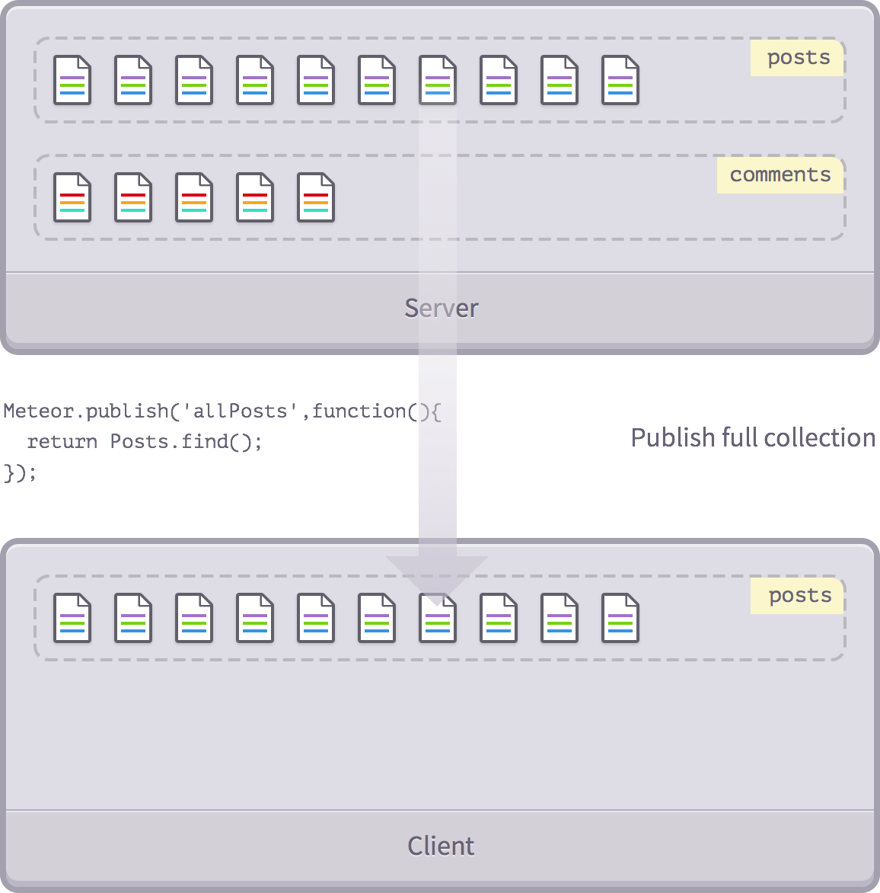
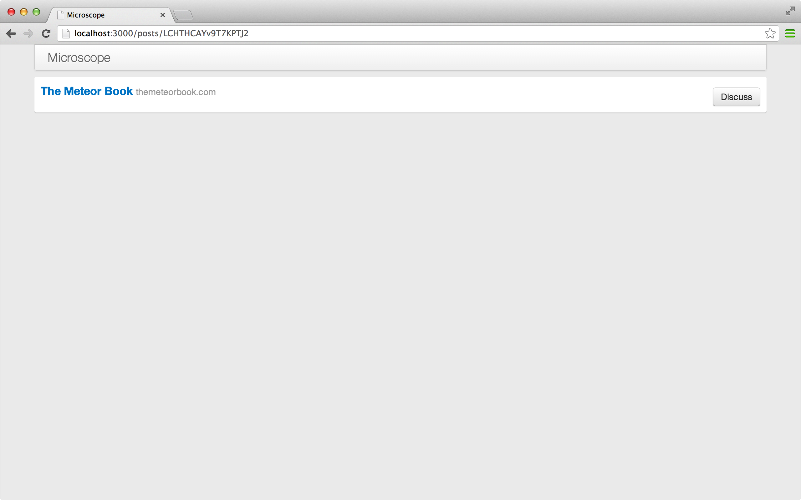
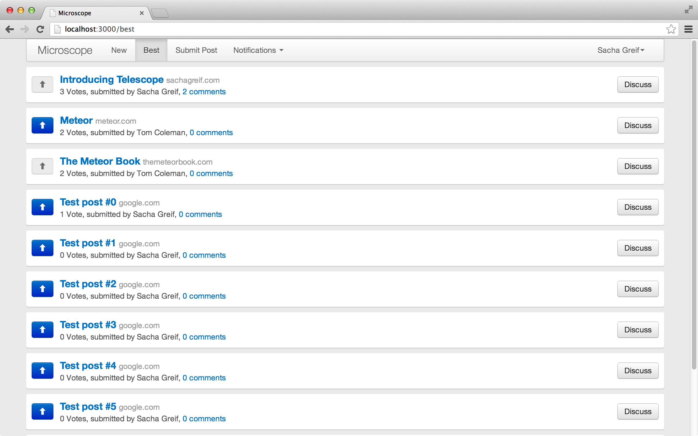

Do a little mental experiment for me. Imagine you're opening the same folder in two different windows on your computer.
Now click inside one of the two windows and delete a file. Did the file disappear from the other window as well?
You don't need to actually do these steps to know that it did. When we modify something on our local filesystems, the change is applied everywhere without the need for refreshes or callbacks. It just happens.
However, let's think about how the same scenario would play out on the web. For example, let's say you opened the same WordPress site admin in two browser windows and then created a new post in one of them. Unlike on the desktop, no matter how long you wait, the other window won't reflect the change unless you refresh it.
Over the years, we've gotten used to the idea that a website is something that you only communicate with in short, separate bursts.
But Meteor is part of a new wave of frameworks and technologies that are looking to challenge the status quo by making the web real-time and reactive.
What is Meteor?
Meteor is a platform built on top of Node.js for building real-time web apps. It's what sits between your app's database and its user interface and makes sure that both are kept in sync.
Since it's built on Node.js, Meteor uses JavaScript on both the client and on the server. What's more, Meteor is also able to share code between both environments.
The result of all this is a platform that manages to be very powerful and very simple by abstracting away many of the usual hassles and pitfalls of web app development.
Why Meteor?
So why should you spend your time learning Meteor rather than another web framework? Leaving aside all the various features of Meteor, we believe it boils down to one thing: Meteor is easy to learn.
More so than any other framework, Meteor makes it possible to get a real-time web app up and running on the web in a matter of hours. And if you've ever done front-end development before, you'll already be familiar with JavaScript and won't even need to learn a new language.
Meteor might be the ideal framework for your needs, or then again it might not. But since you can get started over the course of a few evenings or a week-end, why not try it and find out for yourself?
Why This Book?
For the past 6 months, we've been working on Telescope, an open-source Meteor app that lets anybody create their own social news site (think Reddit or Hacker news), where people can submit links and vote on them.
We learned a ton building the app, but it wasn't always easy to find the answers to our questions. We had to piece things together from many different sources, and in many cases even invent our own solutions. So with this book, we wanted to share all those lessons, and create a simple step-by-step guide that will walk you through building a full-fledged Meteor app from scratch.
The app we're building is a slightly simplified version of Telescope, which we call Microscope. While building it, we'll address all the different elements that go into building a Meteor app, such as user accounts, Meteor collections, routing, and more.
And after you're done reading the book, if you want to go further you'll be able to easily understand the code of Telescope, since it follows the same patterns.
About the Authors
In case you're wondering who we are and why you should trust us, here is a little more background on both of us.
Tom Coleman is one part of Percolate Studio, a web development shop with a focus on quality and user experience. He's also the co-creator of Meteorite and the Atmosphere package repository, and is also behind many other Meteor open-source projects (such as the Router).
Sacha Greif has worked with startups such as Hipmunk and RubyMotion as a product and web designer. He's the creator of Telescope and Sidebar (which is based on Telescope), and is also the founder of Folyo.
Chapters & Sidebars
We wanted this book to be useful both for the novice Meteor user and the advanced programmer, so we split the chapters into two categories: regular chapters (numbered 1 through 14) and sidebars (.5 numbers).
Regular chapters will walk you through building the app, and will try to get you operational as soon as possible by explaining the most important steps without bogging you down with too much detail.
On the other hand, sidebars will go deeper into Meteor's intricacies, and will help you get a better understanding of what's really going on behind the scenes.
So if you're a beginner, feel free to skip the sidebars on your first read, and come back to them later on once you've played around with Meteor.
Commits & Live Instances
There's nothing worse than following along in a programming book and suddenly realizing your code has gotten out of sync with the examples and that nothing works like it should anymore.
To prevent this, we've set up a GitHub repository for Microscope, and we'll also provide direct links to git commits every few code changes. Additionally, each commit also links to a live instance of the app at this particular commit, so you can compare it with your local copy. Here's an example of what that will look like:
But note that just because we provide these commits doesn't mean you should just go from one git checkout to the next. You will learn much better if you take the time to manually type out your app's code!
A Few Other Resources
If you ever want to learn more about a particular aspect of Meteor, the official Meteor documentation is the best place to start.
We also recommend Stack Overflow for troubleshooting and questions, and the #meteor IRC channel if you need live help.
Do I Need Git?
While being familiar with Git version control is not strictly necessary to follow along with this book, we strongly recommend it.
Finally, for every other question you can also just leave us a comment in this app's side panel.
Getting Started
2
In this chapter, you will:
Install Meteor & Meteorite.
Learn about the 5 types of Meteor packages.
Setup the file structure of your Meteor app.
Installing Meteor
To begin with, we can install Meteor from http://meteor.com:
$ curl https://install.meteor.com | sh
This will install the meteor executable onto your system and have you ready to use Meteor.
Not Installing Meteor
If you can't (or don't want to) install Meteor locally, we recommend checking out Nitrous.io.
Nitrous.io is a service that lets you run apps and edit their code right in your browser, and we've written a short guide to help you get set up.
You can simply follow that guide up to (and including) the “Installing Meteor & Meteorite” section, and then follow along with the book again starting from the “Creating a Simple App” secion of this chapter.
Meteorite
Due to the fact that Meteor doesn't yet support third-party packages out of the box, Tom Coleman (one of this book's authors) and some members of the community have created Meteorite, a wrapper for Meteor. Meteorite also takes care of installing Meteor for you and hooking it together with any packages you might find.
Since we'll be relying on third-party packages for some of Microscope's features, let's install Meteorite.
Installing Meteorite
You'll need to ensure node and git are installed on your machine. Install them in the standard way for your OS, or try these links:
That's it! Meteorite will handle things from here.
Note: there is no Windows support for Meteorite yet, but you can take a look at our windows tutorial instead.
### mrt vs meteor
Meteorite installs the mrt executable, which we'll use to install packages into our application. When we want to run our server, however, we use the meteor executable.
Creating a Simple App
Now that we have installed Meteorite, let's create an app. To do this, we use Meteorite's command line tool mrt:
$ mrt create microscope
This command will download Meteor, and set up a basic, ready to use Meteor project for you. When it's done, you should see a directory, microscope/, containing the following:
Congratulations! You've got your first Meteor app running. By the way, to stop the app all you need to do is bring up the terminal tab where the app is running, and press ctrl+c.
Adding a Package
We will now use Meteorite to add a smart package that will let us include Bootstrap in our project:
When speaking about packages in the context of Meteor, it pays to be specific. Meteor uses five basic types of packages:
The Meteor core itself is split into different core packages. They are included with every Meteor app, and you will pretty much never need to worry about these.
Meteor smart packages are a group of about 37 packages (you can get the full list with meteor list) that come bundled with Meteor and that you can optionally import into your own app. You can add them even when you're not using Meteorite, with meteor add packagename.
Local packages are custom packages you can create yourself and put in the /packages directory. You don't need Meteorite to use them either.
Atmosphere smart packages are third-party Meteor packages listed on Atmosphere. Meteorite is needed to import and use them.
NPM packages (Node Packaged Modules) are Node.js packages. Although they don't work out of the box with Meteor, they can be used by the previous types of packages.
The File Structure of a Meteor App
Before we begin coding, we must set up our project properly. To ensure we have a clean build, open up the microscope directory and delete microscope.html, microscope.js, and microscope.css.
Next, create five root directories inside /microscope: /client, /server, /public, /lib, and /collections, and we'll also create empty main.html and main.js files inside /client. Don't worry if this breaks the app for now, we'll start filling in these files in the next chapter.
We should mention that some of these directories are special. When it comes to files, Meteor has a few rules:
Code in the /server directory only runs on the server.
Code in the /client directory only runs on the client.
Everything else runs on both the client and server.
Files in /lib are loaded before anything else.
Any main.* file is loaded after everything else.
Your static assets (fonts, images, etc.) go in the /public directory.
Note that although Meteor has these rules, it doesn't really force you to use any predefined file structure for your app if you don't want to. So the structure we suggest is just our way of doing things, not a rule set in stone.
We encourage you to check out the official Meteor docs if you want more details on this.
Is Meteor MVC?
If you're coming to Meteor from other frameworks such as Ruby on Rails, you might be wondering if Meteor apps adopt the MVC (Model View Controller) pattern.
The short answer is no. Unlike Rails, Meteor doesn't impose any predefined structure to your app. So in this book we'll simply lay out code in the way that makes the most sense to us, without worrying too much about acronyms.
No public?
OK, we lied. We don't actually need the public/ directory for the simple reason that Microscope doesn't use any static assets! But since most other Meteor apps are going to include at least a couple images, we thought it was important to cover it too.
By the way, you might also notice a hidden .meteor directory. This is where Meteor stores its own code, and modifying things in there is usually a very bad idea. The only exceptions to this are the .meteor/packages and .meteor/release files, which are respectively used to list your smart packages and the version of Meteor to use.
Underscores vs CamelCase
The only thing we'll say about the age-old underscore (my_variable) vs camelCase (myVariable) debate is that it doesn't really matter which one you pick as long as you stick to it.
In this book, we're using camelCase because it's the usual JavaScript way of doing things (after all, it's JavaScript, not java_script!).
The only exceptions to this rule are file names, which will use underscores (my_file.js), and CSS classes, which use hyphens (.my-class). The reason for this is that in the filesystem, underscores are most common, while the CSS syntax itself already uses hyphens (font-family, text-align, etc.).
Taking Care of CSS
This book is not about CSS. So to avoid slowing you down with styling details, we've decided to make the whole stylesheet available from the start, so you don't need to worry about it ever again.
CSS automatically gets loaded and minified by Meteor, so unlike other static assets it goes into /client, not /public. Go ahead and create a client/stylesheets/ directory now, and put this style.css file inside it:
In this book we'll be writing in pure JavaScript. But if you prefer CoffeeScript, Meteor has you covered. Simply add the CoffeeScript package and you'll be good to go:
mrt add coffeescript
Deploying
Sidebar2.5
In this chapter, you will:
Learn how to deploy on Meteor.com.
Learn how to deploy on Heroku.
Learn how to deploy on your own server.
This is a sidebar chapter
Unlike the regular chapters you've been reading up to now, sidebars are not really about building Microscope. Instead, they're more generally applicable chapters that dig deeper into a specific aspect of Meteor.
You don't need to read the sidebars to understand the rest of the book. So if this is your first time around, feel free to skip them and focus on the more practical chapters for now.
Some people like to work quietly on a project until it's perfect, while others can't wait to show the world as soon as possible.
If you're the first kind of person and would rather develop locally for now, feel free to skip this chapter. On the other hand, if you'd rather take the time to learn how to deploy your Meteor app online, we've got you covered.
In this chapter, we'll cover three options for deploying: Meteor.com, Heroku, and deploying on your own server.
Deploying on Meteor.com
Deploying on Meteor.com couldn't be easier. Open the command line, navigate to your app's directory, and simply type:
$ meteor deploy myapp.meteor.com
Alternatively, if you want to use your own domain set its CNAME to redirect to origin.meteor.com and then deploy with:
$ meteor deploy www.myapp.com
Hosting on Meteor is free, but is fairly limited since you don't have access to monitoring tools and can't control your resources.
Deploying on Heroku
Deploying on Heroku is still free (as long as you only use one dyno, which is the only way you can make Meteor work on Heroku anyway), but it gives you a little more control over your app.
We won't cover installing Git and the Heroku command line here, but both can be done pretty easily with the Heroku Toolbelt.
You'll need to use the Heroku Buildpack for Meteorite. Heroku Buildpacks contains special instructions for Heroku that specify how to set up a server, in this case in order to run Meteor apps properly.
So if you're creating a new Heroku app, specify the correct buildpack using this command:
$ heroku create --stack cedar --buildpack https://github.com/oortcloud/heroku-buildpack-meteorite.git
Or, you can also add a buildpack to an existing Heroku app like so:
You'll also need to provide a MongoDB database for your app. We recommend the MongoHQ Heroku add-on (it comes with a nice UI for browsing your data), which you can either add via their web admin, or by using the following command:
$ heroku addons:add mongohq:small
Before our Heroku instance is ready, we also need to configure Meteor's ROOT_URL environment variable to tell the app where it's running:
This is also a good time to add other config variables, such as MAIL_URL. For example, if you wanted to use Mailgun to send emails from your app, you would type in the following (while substituting your own Mailgun account credentials):
Now that our configuration is finished, all that remains is to use Git to push to Heroku:
$ git push heroku
Congratulations, your app should now be up and running! And by the way, if you ever need to display your configuration variables (such as your MongoDB database's URL), just type:
$ heroku config
Deploying On Your Own Server
Up to now, we've only talked about deploying on managed platforms like Meteor.com or Heroku. But let's see how to take it one step further and configure a server from scratch to run our app on a service like EC2 or Digital Ocean.
Introducing Meteoric
We've packaged the following process into Meteoric, a convenient script you can install on your local environment that will let you deploy Microscope (or your own app) to EC2 with just two commands: meteoric setup and meteoric deploy.
Let's see how to deploy a Meteor app on the latest version of Ubuntu Server (Ubuntu 13.04 Raring) on EC2. Start up an EC2 instance from your Amazon management console, then connect to it in the usual way.
You will first need to install git and MongoDB:
$ sudo apt-get install git mongodb
(Note: if you want to make sure you get the latest version of Mongo, install it following the official instructions instead.)
Something to keep in mind when deploying a Meteor app to your own server is that Node is still evolving quite quickly (which can sometimes include breaking API changes), and Meteor support for the latest stable Node version can sometimes lag behind.
One solution is to use nvm (Node version manager), but it can be a bit tricky to set up robustly, particularly if you're going to run node as root (more on that later).
So the easier option on Ubuntu is to add the apt-get repository for the legacy node release (i.e., the last stable release before the current stable release):
Next, checkout your app's Git repo, e.g. git clone https://github.com/DiscoverMeteor/microscope.git), in /home/meteor.
The next step is to bundle your app, i.e. generate a fully-contained Node application in a tarball. It is certainly possible to bundle your app in your development environment and then just transmit the tarball, but for now we'd recommend checking out the actual code on the server. This approach has a couple of advantages:
It's Git-based (just specify your project's repository)
It doesn't require you to have Meteor installed locally
It doesn't require re-building packages like Fibers (which are platform-dependent)
And finally, it should allow for hot code fixes (your Node server won't stop when deploying your app)
To bundle and untar our app (note that it would actually be handy for Meteor to be able to “bundle as a directory, not a tarball”), we do:
$ cd mymeteorapp
$ mrt bundle ../bundle.tgz
$ cd ..
$ tar -zxvf bundle.tgz
If you're serving your app on HTTP's standard port 80, remember to run this command as root, since processes run by non-root users don't have access to that port. Alternatively, you can also serve the app on another port and forward it to port 80.
You can also specify configuration options (MAIL_URL, ROOT_URL) as environment variables in the same command.
Next, we need to make sure the app runs continuously, i.e. have it restart automatically if it crashes. The simplest way to do that is to use forever:
Forever preserves environment variables, so you just need to export them before starting the app: export PORT=80 MONGO_URL=mongodb://localhost:27017/myapp ROOT_URL=http://myapp.com.
Finally, something is still missing to obtain a bullet-proof setup: automatic startup of the app on the machine's reboot.
Using Ubuntu's Upstart, you can very easily tell your OS that your meteor app should start automatically whenever the server restarts. Put the following snippet into /etc/init/meteor.conf, and then type service meteor start. You don't need automatic respawns, as forever already takes care of that!
# /etc/init/meteor.conf
start on (local-filesystems)
stop on shutdown
script
cd /home/ubuntu
export PORT=80 MONGO_URL=mongodb://localhost:27017/myapp ROOT_URL=http://myapp.com
exec forever start bundle/main.js
end script
Templates
3
In this chapter, you will:
Learn about Meteor's templating language, Handlebars.
Create your first three templates.
Learn how Meteor managers work.
Get a basic prototype working with static data.
Our First Template
To ease into Meteor development, we'll adopt an outside-in approach. In other words we'll build a “dumb” HTML/JavaScript outer shell first, and then hook it up to our app's inner workings later on.
This means that in this chapter we'll only concern ourselves with what's happening inside the /client directory.
Let's create a new file named main.html inside our /client directory, and fill it with the following code:
This will be our main app template. As you can see it's all HTML except for a single {{> postsList}} tag, which is an insertion point for the postsList template as we'll soon see. For now, let's create a couple more templates.
Meteor Templates
At its core, a social news site is composed of posts organized in lists, and that's exactly how we'll organize our templates.
Let's create a /views directory inside /client. This will be where we put all our templates, and to keep things tidy we'll also create /posts inside /views just for our post-related templates.
Finding Files
Meteor is great at finding files. No matter where you put your code in the /client directory, Meteor will find it and compile it properly. This means you never need to manually write include paths for JavaScript or CSS files.
It also means you could very well put all your files in the same directory, or even all your code in the same file. But since Meteor will compile everything to a single minified file anyway, we'd rather keep things well-organized and use a cleaner file structure.
We're finally ready to create our second template. Inside client/views/posts, create posts_list.html:
Note the name="postsList" attribute of the template element. This is the name that will be used by Meteor to keep track of what template goes where.
It's time to introduce Meteor's templating system, Handlebars. Handlebars is simply HTML, with the addition of three things: partials, expressions and block helpers.
Partials use the {{> templateName}} syntax, and simply tell Meteor to replace the partial with the template of the same name (in our case postItem).
Expressions such as {{title}} either call a property of the current object, or the return value of a template helper as defined in the current template's manager (more on this later).
Finally, block helpers are special tags that control the flow of the template, such as {{#each}}{{/each}} or {{#if}}{{/if}}.
Armed with this knowledge, we can easily understand what's going on here.
First, in the postsList template, we're iterating over a posts object with the {{#each}}{{/each}} block helper. Then, for each iteration we're including the postItem template.
Where is this posts object coming from? Good question. It's actually a template helper, and we'll define it when we look at template managers.
The postItem template itself is fairly straightforward. It only uses three expressions: {{url}} and {{title}} both return the document's properties, and {{domain}} calls a template helper.
We've mentioned “template helpers” a lot throughout this chapter without really explaining what they do. But in order to fix this, we must first talk about managers.
Template Managers
Up to now we've been dealing with Handlebars, which is little more than HTML with a few tags sprinkled in. Unlike other languages like PHP (or even regular HTML pages, which can include JavaScript), Meteor keeps templates and their logic separated, and these templates don't do much by themselves.
In order to come to life, a template needs a manager. You can think of the manager as the chef that takes raw ingredients (your data) and prepares them, before handing out the finished dish to the waiter (the template) who then presents it to you.
In other words, while the template's role is limited to displaying or looping over variables, the manager is the one who actually does the heavy lifting by assigning a value to each variable.
Managers?
When we asked around to see what other Meteor developers called template managers, half said “controllers”, and half said “those files where I put my JavaScript code”.
Managers aren't really controllers (at least, not in the sense of MVC controllers) and “TFWIPMJSC” isn't really that catchy, so we rejected both propositions.
Since we still wanted a way to indicate what we were talking about, we came up with the term “manager” as a handy shortcut that didn't have any pre-existing meaning as far as web frameworks are concerned.
To keep things simple, we'll adopt the convention of naming the manager after the template, except with a .js extension. So let's create posts_list.js inside /client/views/posts right away and start building our first manager:
We're doing two things here. First we're setting up some dummy prototype data in the postsData array. That data would normally come from the database, but since we haven't seen how to do that yet (wait for the next chapter) we're “cheating” by using static data.
Second, we're using Meteor's Template.myTemplate.helpers() function to define a template helper called posts that simply returns our postsData array.
Defining the posts helper means it is now available for our template to use:
This time our domain helper's value is not an array, but an anonymous function. This pattern is much more common (and more useful) compared to our previous simplified dummy data examples.
Displaying domains for each links.
The domain helper takes a URL and returns its domain via a bit of JavaScript magic. But where does it take that url from in the first place?
To answer that question we need to go back to our posts_list.html template. The {{#each}} block helper not only iterates over our array, it also sets the value of this inside the block to the iterated object.
This means that between both {{#each}} tags, each post is assigned to this successively, and that extends all the way inside the included template's manager (post_item.js).
We now understand why this.url returns the current post's URL. And moreover, if we use {{title}} and {{url}} inside our post_item.html template, Meteor knows that we mean this.title and this.url and returns the correct values.
JavaScript Magic
Although this is not specific to Meteor, here's a quick explanation of the above bit of JavaScript magic. First, we're creating an empty anchor (a) HTML element and storing it in memory.
We then set its href attribute to be equal to the current post's URL (as we've just seen, in a helper this is the object currently being acted upon).
Finally, we take advantage of that a element's special hostname property to get back the link's domain name without the rest of the URL.
If you've followed along correctly, you should be seeing a list of posts in your browser. That list is just static data, so it doesn't take advantage of Meteor's real-time features just yet. We'll show you how to change that in the next chapter!
Hot Code Reload
You might have noticed that you didn't even need to manually reload your browser window whenever you changed a file.
This is because Meteor tracks all the files within your project directory, and automatically refreshes your browser for you whenever it detects a modification to one of them.
Meteor's hot code reload is pretty smart, even preserving the state of your app in between two refreshes!
Collections
4
In this chapter, you will:
Learn about Meteor's core feature: realtime collections.
Understand how Meteor's data synchronization works.
Integrate collections with our templates.
Turn our basic prototype into a functioning realtime application!
Introduction to Collections
In chapter one, we spoke about the core feature of Meteor, the automatic synchronisation of data between client and server. In this chapter, we'll take a closer look at how that works, and observe the operation of the key piece of technology that enables this, the Meteor.Collection.
We are building a social news app, so the first thing we want to do is make a list of links that people have posted. We'll call each of these items a “post.”
Naturally, we need to store these posts somewhere. As of this writing, Meteor comes bundled with a Mongo database which runs on your server and is your persistent data store.
So, although a user's browser may contain some kind of state (for instance which page they are on, or the comment they are currently typing), the server, and specifically Mongo, contains the permanent, canonical data source. By canonical, we mean that it is the same for all users: each user might be on a different page, but the master list of posts is the same for all.
This data is stored in Meteor in the Collection. A collection is a special data structure that, along with publications, takes care of the job of synchronising real-time data to and from each connected user's browser and into the Mongo database. Let's see how.
We want our posts to be permanent and shared between users, so we'll start by creating a collection called Posts to store them in. If you haven't done so already create a collections/ folder at the root of your app, and then a posts.js file inside it. Then add:
Code inside folders that are not client/ or server/ will run in both contexts. So the Posts collection is available to both client and server. However, what the collection does in each environment is very different.
To Var Or Not To Var?
In Meteor, the var keyword limits the scope of an object to the current file. We want to make the Posts collection available to our whole app, which is why we're omitting that keyword here.
On the server, the collection has the job of talking to the Mongo database, and reading and writing any changes. In this sense, it can be compared to a standard database library. On the client however, the collection is a secure copy of a subset of the real, canonical collection. The client-side collection is constantly and (mostly) transparently kept up to date with that subset in real-time.
Server-side Collections
On the server, the collection acts as an API into your Mongo database. In your server-side code, this allows you to write Mongo commands like Posts.insert() or Posts.update(), and they will make changes to the posts collection stored inside Mongo.
To look inside the Mongo database, open up a second terminal window (while meteor is still running in your first), and go to your app's directory. Then, run the command meteor mongo to initiate a Mongo shell, into which you can type standard Mongo commands (and as usual, you can quit it with the ctrl+c keyboard shortcut). For example, let's insert a new post:
> db.posts.insert({title: "A new post"});
> db.posts.find();
{"_id": ObjectId(".."), "title" : "A new post"};
the Mongo console
Mongo on Meteor.com
Note that when hosting your app on *.meteor.com, you can also access your deployed app's Mongo console with meteor mongo myApp.
And while we're at it, you can also get your app's logs by typing meteor logs myApp.
Mongo's syntax is familiar, as it uses a JavaScript interface. We won't be doing any further data manipulation in the Mongo console, but we might take a peek inside from time to time just to make sure what's in there.
Client-side Collections
Collections get more interesting client-side. When you declare Posts = new Meteor.Collection('posts'); on the client, what you are creating is a local, in-browser cache of the real Mongo collection. When we talk about a client-side collections being a “cache”, we mean it in the sense that it contains a subset of your data, and offers very quick access to this data.
It's important to understand this point as it's fundamental to the way Meteor works. In general, a client side collection consists of a subset of all the documents stored in the Mongo collection (after all, we generally don't want to send our whole database to the client).
Secondly, those documents are stored in browser memory, which means that accessing them is basically instantaneous. So there are no slow trips to the server or the database to fetch the data when you call Posts.find() on the client, as the data is already pre-loaded.
Introducing MiniMongo
Meteor's client-side Mongo implementation is called MiniMongo. It's not a perfect implementation yet, and you may encounter occasional Mongo features that don't work in MiniMongo.
Nevertheless, all the features we cover in this book work similarly in both Mongo and MiniMongo.
Client-Server Communication
The key piece of all this is how the client-side collection sychronizes its data with the server-side collection of the same name ('posts' in our case).
Rather than explaining this in detail, let's just watch what happens.
Start by opening up two browser windows, and accessing the console in each one. Then, open up the Mongo console on the command line. At this point, we should see the single document we created earlier in all three contexts.
> db.posts.find();
{title: "A new post", _id: ObjectId("..")};
Mongo console
Posts.findOne();{title:"A new post",_id:LocalCollection._ObjectID};
First browser console
Now, let's create a new post. In one of the browser windows, run an insert command:
Posts.find().count();1Posts.insert({title:"A second post"});'xxx'Posts.find().count();2
First browser console
Unsurprisingly, the post made it into the local collection. Now let's check Mongo:
db.posts.find();
{title: "A new post", _id: ObjectId("..")};
{title: "A second post", _id: 'yyy'};
Mongo console
So as you can see, the post made it all the way back to the Mongo database, without us writing a single line of code to hook our client up to the server (well, strictly speaking, we did write a single line of code: new Meteor.Collection('posts')). You might also notice that Meteor's given the object a string _id, rather than Mongo's builtin ObjectId. But that's not all!
Bring up the second browser window and enter this in the browser console:
Posts.find().count();2
Second browser console
The post is there too! Even though we never refreshed or even interacted with the second browser, and we certainly didn't write any code to push updates out. It all happened magically –and instantly too, although this will become more obvious later.
What happened is that our server-side collection was informed by a client collection of a new post, and took on the task of distributing that post into the Mongo database and back out to all the other connected post collections.
Fetching posts on the browser console isn't that useful. We will learn how to wire this data into our templates, and in the process turn our simple HTML prototype into a functioning realtime web application.
Collections vs Caches
The comparison of a collection to a cache is useful to illustrate how fast it is to access, but don't take the analogy too far!
Where a client-side collection differs from a cache is in the fact that the data loaded into it is fixed and decided by your application. It can be changed as a user browses around, but if you try to find a document that hasn't been sent to the browser there is no “cache-miss”, or subsequent server access. It just appears as if the document does not exist.
You explicitly decide, through publications, which data will be loaded into each collection. We'll learn more about this mechanism soon.
Keeping it Real-time
Looking at the contents of our Collections on the browser console is one thing, but what we'd really like to do is display the data, and the changes to that data, on the screen. In doing so we'll turn our app from a simple web page displaying static data, to a realtime web application with dynamic, changing data.
Let's find out how.
Populating the Database
The first thing we'll do is put some data into the database. We'll do so with a fixture file that loads a set of structured data into the Posts collection when the server first starts up.
First, let's make sure there's nothing in the database. We'll use meteor reset, which erases your database and resets your project. Of course, you'll want to be very careful with this command once you start working on real-world projects.
Stop the Meteor server (by pressing ctrl-c) and then, on the command line, run:
$ meteor reset
The reset command completely clears out the Mongo database. It's a useful command in development, where there's a strong possibility of our database falling into an inconsistent state.
Now that the database is empty, we can add the following code that will load up three posts whenever the server starts and finds the Posts collection empty:
We've placed this file in the server/ directory, so it will never get loaded on any user's browser. The code will run immediately when the server starts, and make insert calls on the database to add three simple posts in our Posts collection. As we haven't built any data security yet, there's no real difference between doing this in a file run on the server or in the browser.
Now run your server again with meteor, and these three posts will get loaded into the database.
Wiring the data to our HTML with helpers
Now, if we open up a browser console, we see all three posts loaded up into MiniMongo:
Posts.find().fetch();
Browser console
To get these posts into rendered HTML, we can use a template helper. In Chapter 3 we saw how Meteor allows us to bind a data context to our Handlebars templates to build HTML views of simple data structures. We can bind in our collection data in the exact same way. We'll just replace our static postsData JavaScript object by a dynamic collection.
Speaking of which, feel free to delete the postsData code at this point. Here's what posts_list.js should now look like:
In Meteor, find() returns a cursor, which is a reactive data source. When we want to log its contents, we can then use fetch() on that cursor to transform it into an array .
Within an app, Meteor is smart enough to know how to iterate over cursors without having to explicitly convert them into arrays first. This is why you won't see fetch() that often in actual Meteor code (and why we didn't use it in the above example).
Now, rather than pulling a list of posts as a static array from a variable, we return a cursor to our posts helper. But what does this do? If we go back to our browser, we see:
Using live data
So we can clearly see that our {{#each}} helper has iterated over all of our Posts, and displayed them on the screen. The server-side collection pulled the posts from Mongo, passed them over the wire to our client-side collection, and our handlebars helper passed them into the template.
Now, we'll take this one step further; let's add another post via the console:
You have just seen reactivity in action for the first time. When we told handlebars to iterate over the Posts.find() cursor, it knew how to observe that cursor for changes, and patch the HTML in the simplest way to display the correct data on screen.
Inspecting DOM Changes
In this case, the simplest change possible was to add another <div class="post">...</div>. If you want to make sure this is really what happened, open the DOM inspector and select the <div> corresponding to one of the existing posts.
Now, in the JavaScript console, insert another post. When you tab back to the inspector, you'll see an extra <div>, corresponding to the new post, but you will still have the same existing <div> selected. This is a useful way to tell when elements have been re-rendered and when they have been left alone.
Connecting Collections: Publications and Subscriptions
So far, we've had the autopublish package enabled, which is not intended for production applications. As its name indicates, this package simply says that each collection should be shared in its entirety to each connected client. This isn't what we really want, so let's turn it off.
Open a new terminal window, and type:
$ meteor remove autopublish
This has an instant effect. If you look in your browser now, you'll see that all our posts have disappeared! This is because we were relying on autopublish to make sure our client-side collection of posts was a mirror of all the posts in the database.
Eventually we'll need to make sure we're only transferring the posts that the user actually needs to see (taking into account things like pagination). But for now, we'll just setup Posts to be published in its entirety.
To do so, we create a simple publish() function that returns a cursor referencing all posts:
If we check the browser again, our posts are back. Phew!
Conclusion
So what have we achieved? Well, although we don't have a user interface yet, what we have now is a functional web application. We could deploy this application to the Internet, and (using the browser console) start posting new stories and see them appear in other user's browsers all over the world.
Publications and Subscriptions
Sidebar4.5
In this chapter, you will:
Understand how publications and subscriptions work.
Learn what the default Autopublish package does.
See a few more examples of publication patterns.
Publications and subscriptions are one of the most fundamental and important concepts in Meteor, but can be the most difficult to understand. This is mostly because what they are doing is foreign to developers who are used to more traditional ways of building for the web.
We are used to defining and thinking about our own APIs for passing data between client and server, through explicitly designed and utilized protocols, but in Meteor data is synchronized for us. We don't need to think directly about how data makes it from client to server. Instead we use publications to control which data is synchronized.
Part of the reason people find the concept a bit confusing initially is the “magic” that Meteor does for us. Although this magic is ultimately very useful, it can obscure what's really going on behind the scenes (as magic tends to do). So let's strip away the layers of magic to try and understand what's happening.
Defining Publications
Fundamentally, a publication (which we connect to using a subscription) is a method of transferring data from a server-side (source) collection to a client-side (target) collection. Think of the subscription as a funnel connecting the canonical data store (the source collection, which talks to the Mongo data-store) and the client-side cache (the target collection, which represents a copy or a subset of that data).
The publication controls exactly what data passes through that funnel, and takes care of synchronizing the data between either end. By attaching multiple subscriptions to the server's data-store, we are able to keep the browser's view of the data in-sync efficiently, securely and in real-time.
The protocol that is spoken over that tunnel is called DDP (which stands for Distributed Data Protocol). To learn more about DDP, you can watch this talk from The Real-time Conference by Matt DeBergalis (one of the founders of Meteor), or this screencast by Chris Mather that walks you through this concept in a little more detail.
Now that we've established the basics, let's dive in.
Autopublish
If you create a Meteor project from scratch (i.e using meteor create), it will automatically have the autopublish package enabled. As a starting point, let's talk about what that does exactly.
Depending on how you look at it, autopublish either removes the need for publications or simply takes care of them for you. What autopublish does is automatically mirrors all data from the server on the client.
Autopublish
How does this work? Suppose you have a collection called 'posts' on the server. Then autopublish will automatically send every post that it finds in the Mongo posts collection into a collection called 'posts' on the client (assuming there is one).
So if you are using autopublish, you don't need to think about publications. Data is ubiquitous, and things are simple. Of course, there are obvious problems with having a complete copy of your app's database cached on every user's machine.
For this reason, autopublish is only appropriate when you are starting out, and haven't yet thought about publications.
Publishing Full Collections
Publishing a full collection
Once you remove autopublish, you'll quickly realize that all your data has vanished from the client. An easy way to get it back is to simply duplicate what autopublish does, and publish a collection in its entirety. For example:
We're still publishing full collections, but at least we now have control over which collections we publish or not. In this case, we're publishing the Posts collection but not Comments.
Publishing Partial Collections
The next level of control is publishing only part of a collection. For example only the posts that belong to a certain author:
The code is easy enough, but what is actually going on behind the scenes?
If you've read the Meteor publication documentation, you were perhaps overwhelmed by talk of using added() and ready() to set attributes of records on the client, and struggled to square that with the Meteor apps that you've seen that never use those methods.
The reason is that Meteor provides a very important convenience: the _publishCursor() method. You've never seen that used either? Perhaps not directly, but if you return a cursor (i.e. Posts.find({'author':'Tom'})) in a publish function, that's exactly what Meteor is using.
When Meteor sees that the somePosts publication has returned a cursor, it calls _publishCursor() to – you guessed it – publish that cursor automatically.
Here's what _publishCursor() does:
It checks the name of the server-side collection.
It pulls all matching documents from the cursor and sends it into a client-side collection of the same name. (It uses .added() to do this).
Whenever a document is added, removed or changed, it sends those changes down to the client-side collection. (It uses .observe() on the cursor and .added(), .updated() and removed() to do this).
So in the example above, we are able to make sure that the user only has the posts that they are interested in (the ones written by Tom) available to them in their client side cache.
Publishing Partial Properties
Publishing partial properties
We've seen how to only publish some of our posts, but we can keep slicing thinner! Let's see how to only publish specific properties.
Just like before, we'll use find() to return a cursor, but this time we'll exclude certain fields:
So we've seen how to go from publishing every property of all documents of every collection (with autopublish) to publishing only some properties of some documents of some collections.
This covers the basics of what you can do with Meteor publications, and these simple techniques should take care of the vast majority of use cases.
Sometimes, you'll need to go further by combining, linking, or merging publications. We will cover these in a later chapter!
Routing
5
In this chapter, you will:
Learn about routing in Meteor.
Create post discussion pages, with unique URLs.
Learn how to link to those URLs properly.
Now that we have a list of posts (which will eventually be user-submitted), we need an individual post page where our users will be able to discuss each post.
We'd like these pages to be accessible via a permalink, a URL of the form http://myapp.com/posts/xyz (where xyz is a MongoDB _id identifier) that is unique to each post.
This means we'll need some kind of routing to look at what's inside the browser's URL bar and display the right content accordingly.
Adding the Iron Router Package
Iron Router is a routing package that was conceived specifically for Meteor apps.
Not only does it help with routing (setting up paths), but it can also take care of filters (assigning actions to some of these paths) and even manage subscriptions (control which path has access to what data). (Note: Iron Router was developed in part by Discover Meteor co-author Tom Coleman.)
First, let's install the package from Atmosphere:
$ mrt add iron-router
Terminal
This command downloads and installs the iron-router package into our app, ready to use.
Note that the Iron Router is a third-party package, meaning that you'll need Meteorite to install it (meteor add iron-router won't work).
Router Vocabulary
We'll be touching on a lot of different features of the router in this chapter. If you have some experience with a framework such as Rails, you'll already be familiar with most of these concepts. But if not, here's a quick glossary to bring you up to speed:
Routes: A route is the basic building block of routing. It's basically the set of instructions that tell the app where to go and what to do when it encounters a URL.
Paths: A path is a URL within your app. It can be static (/terms_of_service) or dynamic (/posts/xyz), and even include query parameters (/search?keyword=meteor).
Segments: The differents parts of a path, delimited by forward slashes (/).
Hooks: Hooks are actions that you'd like to perform before, after, or even during the routing process. A typical example would be checking if the user has the proper rights before displaying a page.
Filters: Filters are simply hooks that you define globally for one or more routes.
Route Templates: Each route needs to point to a template. If you don't specify one, the router will look for a template with the same name as the route by default.
Layouts: You can think of layouts as one of those digital photo frames. They contain all the HTML code that wraps the current template, and will remain the same even if the template changes.
Controllers: Sometimes, you'll realize that a lot of your templates are reusing the same parameters. Rather than duplicate your code, you can let all these routes inherit from a single routing controller which will contain all the routing logic.
So far, we've built our layout using hard-coded template includes (such as {{>header}}. So although the content of our app can change, the page's basic structure is always the same: a header, with a list of posts below it.
The Iron Router lets us break out of this mold by taking over what renders inside the HTML <body> tag. So we won't define that tag's content ourselves, as we would with a regular HTML page. Instead, we will point the router to a special layout template that contains a {{yield}} template helper.
This {{yield}} helper will define a special dynamic zone that will automatically render whichever template corresponds to the current route (as a convention, we'll designate this special template as the route templates from now on):
Layouts and templates.
We'll start by creating our layout and adding the {{yield}} helper. First, we'll remove our HTML <body> tag and move our layout code to its own template, layout.html:
We've replaced the inclusion of the postsList template with a call to yield helper. You'll notice that after this change, we see nothing on the screen. This is because we haven't told the router what to do with the / URL yet, so it simply serves up an empty template.
To begin, we can regain our old behaviour by mapping the root / URL to the postsList template. We'll create a /lib directory at our project's root, and inside it create router.js :
We've done two important things. First, we've told the router to use the layout we just created as the default layout for all routes. Second, we've defined a new route called postsList and mapped it to the / path.
The /lib folder
Anything you put inside the /lib folder is guaranteed to load first before anything else in your app (with the possible exception of smart packages). This makes it a great place to put any helper code that needs to be available at all times.
A bit of warning though: note that since the /lib folder is neither inside /client or /server, this means its contents will be available to both environments.
Named Routes
Let's clear up a bit of ambiguity here. We named our route postsList, but we also have a template called postsList. So what's going on here?
By default, Iron Router will look for a template with the same name as the route. In fact, it will even look for a path based on the route name, meaning that if we hadn't defined a custom path (which we did by providing a path option in our route definition), our template would've been accessible at URL /postLists by default.
You may be wondering why we even need to name our routes in the first place. Naming routes lets us use a few Iron Router features that make it easier to build links inside our app. The most useful one is the {{pathFor}} Handlebars helper, which returns the URL path component of any route.
We want our main home link to point us back to the posts list, so instead of specifying a static / URL, we can also use the Handlebars helper. The end result will be the same, but this gives us more flexibility since the helper will always output the right URL even if we change the route's path in the router.
If you deploy the current version of the app (or launch the instance using the link above), you'll notice that the list appears empty for a few moments before the posts appear. This is because when the page first loads, there are no posts to display until the posts subscription is done grabbing the post data from the server.
It would be a much better user experience to provide some visual feedback that something is happening, and that the user should wait a moment.
Luckily, Iron Router gives us an easy way to do that – we'll waitOn the subscription:
Let's break things down. First, we've modified the Router.configure() block to provide the router with the name of a loading template (which we'll create soon) to redirect to while our app is waiting for data.
Second, we've also added a waitOn function, which returns our posts subscription. What this means is that the router will ensure that the posts subscription is loaded before sending the user through to the route they requested.
Note that since we're defining our waitOn function globally at the router level, this sequence will only happen once when a user first accesses your app. After that, the data will already be loaded in the browser's memory and the router won't need to wait for it again.
And since we are now letting the router handle our subscription, you can now safely remove it from main.js (which should now be empty).
It's usually a good idea to wait on your subscriptions, not just for the user experience, but also because it means you can safely assume that data will always be available from within a template. This eliminates the need to deal with templates being rendered before their underlying data is available, which often requires tricky workarounds.
The final piece of the puzzle is the actual loading template. We'll use the spin package to create a nice animated loading spinner. Add it with mrt add spin, and then create the loading template as follows:
<templatename="loading">
{{>spinner}}
</template>
client/views/includes/loading.html
Note that {{>spinner}} is a partial contained in the spin package. Even though this partial comes from outside our app, we can include it just like any other template.
Reactivity is a core part of Meteor, and although we've yet to really touch on it, our loading template gives us a first glance at this concept.
Redirecting to a loading template if data isn't loaded yet is all well and good, but how does the router knows when to redirect the user back to the right page once the data comes through?
For now, let's just say that this is exactly where reactivity comes in, and leave it at this. But don't worry, you'll learn more about it very soon!
Routing To A Specific Post
Now that we've seen how to route to the postsList template, let's set up a route to display the details of a single post.
There's just one catch: we can't go ahead and define one route per post, since there might be hundreds of them. So we'll need to set up a single dynamic route, and make that route display any post we want.
To start with, we'll create a new template that simply renders the same post template that we used earlier in the list of posts.
The special :_id syntax tells the router two things: first, to match any route of the form /posts/xyz/, where xyz can be anything at all. Second, to put whatever it finds in this xyz spot inside an _id property in the router's params array.
Note that we're only using _id for convenience's sake here. The router has no way of knowing if you're passing it an actual _id, or just some random string of characters.
We're now routing to the correct template, but we're still missing something: the router knows the _id of the post we'd like to display, but the template still has no clue. So how do we bridge that gap?
Thankfully, the router has a clever built-in solution: it lets you specify a template's data context. You can think of the data context as the filling inside a delicious cake made of templates and layouts. Simply put, it's what you fill up your template with:
The data context.
In our case, we can get the proper data context by looking for our post based on the _id we got from the URL:
So every time a user accesses this route, we'll find the appropriate post and pass it to the template. Remember that findOne returns a single post that matches a query, and that providing just an id as an argument is a shorthand for {_id: id}.
Within the data function for a route, this corresponds to the currently matched route, and we can use this.params to access the named parts of the route (which we indicated by prefixing them with : inside our path).
More About Data Contexts
By setting a template's data context, you can control the value of this inside template helpers.
This is usually done implicitly with the {{#each}} iterator, which automatically sets the data context of each iteration to the item currently being iterated on:
{{#each widgets}}
{{> widgetItem}}
{{/each}}
But we can also do it explicitly using {{#with}}, which simply says “take this object, and apply the following template to it”. For example, we can write:
{{#with myWidget}}
{{> widgetPage}}
{{/with}}
It turns out you can achieve the same result by passing the context as an argument to the template call. So the previous block of code can be rewritten as:
{{> widgetPage myWidget}}
Using a Dynamic Named Route Helper
Finally, we need to make sure that we're pointing to the right place whevener we want to link to an individual post. Again, we could do something like <a href="/posts/{{_id}}>, but using a route helper is just more reliable.
We've named the post route postPage, so we can use a {{pathFor 'postPage'}} helper:
But wait, how exactly does the router know where to get the xyz part in /posts/xyz? After all, we're not passing it any _id.
It turns out that Iron Router is smart enough to figure it out by itself. We're telling the router to use the postPage route, and the router knows that this route requires an _id of some kind (since that's how we defined our path) .
So the router will look for this _id in the most logical place available: the data context of the {{pathFor 'postPage'}} helper, in other words this. And it so happens that our this corresponds to a post, which (surprise!) does possess an _id property.
Alternatively, you can also explicitely tell the router where you'd like it to look for the _id property, by passing a second argument to the helper (i.e. {{pathFor 'postPage' someOtherPost}}). A practical use of this pattern would be getting the link to the previous or next posts in a list, for example.
To see if it works correctly, browse to the post list and click on one of the 'Discuss' links. You should see something like this:
A single post page.
HTML5 pushState
One thing to realise is that these URL changes are happening using HTML5 pushState.
The Router picks up clicks on URLs that are internal to the site, and prevents the browser from browsing away from the app, instead just making the necessary changes to the app's state.
If everything is working correctly the page should change instantaneously. In fact, sometimes things change so fast that some kind of page transition might be needed. This is outside of the scope of this chapter, but an interesting topic nonetheless.
The Session
Sidebar5.5
In this chapter, you will:
Learn about the Meteor Session
Learn about the autorun function
Learn about Hot Code Reload
Meteor is a reactive framework. What this means is that as data changes, things in your application change without you having to explicitly do anything. We've already seen this in action in how our templates change as the data and the route changes.
We'll dive deeper into how this works in later chapters, but for now, we'd like to introduce some basic reactive features that are extremely useful in general apps.
The Meteor Session
Right now in Microscope, the current state of the the user's application is completely contained in the URL that they are looking at (and the database).
But in many cases, you'll need to store some ephemeral state that is only relevant to the current user's version of the application (for example, if an element is shown or hidden). The Session is a convienent way to do this.
The Session is a global reactive data store. It's global in the sense of a global singleton object: there's one session, and it's accessible everywhere. Global variables are usually seen as a bad thing, but in this case the session is used as a central communication bus for different parts of the application.
Changing the Session
The Session is available everywhere as Session. To set a session value, you can call:
Session.set('pageTitle','A different title');
Browser console
You can read the data back out again with Session.get('mySessionProperty');. This is a reactive data source, which means that if you were to put it in a helper, you would see the helper's output change reactively as the Session variable is changed.
To try this, add the following code to the layout template:
Meteor's automatic reload (know as the hot code reload or HCR) preserves Session variables, so we should now see “A different title” displayed in the nav bar. If not, just type the previous Session.set() command again.
Moreover if we change the value once more (again in the browser console), we should see yet another title displayed:
Session.set('pageTitle','A brand new title');
Browser console
The Session is globally available, so such changes can be made anywhere in the application. This gives us a lot of power, but can also be a trap if used too much.
Identical Changes
If you modify a Session variable with Session.set() but set it to an identical value, Meteor is smart enough to bypass the reactive chain, and avoid unnecessary method calls.
Introducing Autorun
We've looked at an example of a reactive data source, and watched it in action inside a template helper. But while some contexts in Meteor (such as template helpers) are inherently reactive, the majority of a Meteor's app code is still plain old non-reactive JavaScript.
Let's suppose we have the following code snippet somewhere in our app:
Even though we're calling a Session variable, the context in which it's called is not reactive, meaning that we won't get new alerts every time we change the variable.
This is where Autorun comes in. As the name implies, the code inside an autorun block will automatically run and keep running each and every time the reactive data sources used inside it change.
Try typing this into the browser console:
Deps.autorun(function(){console.log('Value is: '+Session.get('pageTitle'));});Valueis:Abrandnewtitle
Browser console
As you might expect, the block of code provided inside the autorun runs once, outputting its data to the console. Now, let's try changing the title:
Session.set('pageTitle','Yet another value');Valueis:Yetanothervalue
Browser console
Magic! As the session value changed, the autorun knew it had to run its contents all over again, re-outputting the new value to the console.
So going back to our previous example, if we want to trigger a new alert every time our Session variable changes, all we need to do is wrap our code in an autorun block:
As we've just seen, autoruns can be very useful to track reactive datasources and react imperatively to them.
Hot Code Reload
During our development of Microscope, we've been taking advantage of one of Meteor's time-saving features: hot code reload (HCR). Whenever we save one of our source code files, Meteor detects the changes and transparently restarts the running Meteor server, informing each client to reload the page.
This is similar to an automatic reload of the page, but with an important difference.
To find out what that is, start by resetting the session variable we've been using:
Session.set('pageTitle','A brand new title');Session.get('pageTitle');'A brand new title'
Browser console
If we were to reload our browser window manually, our Session variables would naturally be lost (since this would create a new session). On the other hand, if we trigger a hot code reload (for example, by saving one of our source files) the page will reload, but the session variable will still be set. Try it now!
Session.get('pageTitle');'A brand new title'
Browser console
So if we're using session variables to keep track of exactly what the user is doing, the HCR should be almost transparent to the user, as it will preserve the value of all session variables. This enables us to deploy new production versions of our Meteor application with the confidence that our users will be minimally disrupted.
Consider this for a moment. If we can manage to keep all of our state in the URL and the session, we can transparently change the running source code of each client's application underneath them with minimal disruption.
Let's now check what happens when we refresh the page manually:
Session.get('pageTitle');null
Browser console
When we reloaded the page, we lost the session. On an HCR, Meteor saves the session to local storage in your browser and loads it in again after the reload. However, the alternate behaviour on explicit reload makes sense: if a user reloads the page, it's as if they've browsed to the same URL again, and they should be reset to the starting state that any user would see when they visit that URL.
The important lessons in all this are:
Always store user state in the Session or the URL so that users are minimally disrupted when a hot code reload happens.
Store any state that you want to be shareable between users within the URL itself.
Adding Users
6
In this chapter, you will:
Learn about user accounts in Meteor.
Add all the authentication we'll need for Microscope.
Use the built-in accounts-ui package to get an instant user interface.
So far, we've managed to create and display some static fixture data in a sensible fashion and wire it together into a simple prototype. We've even seen how our UI is responsive to changes in the data, and inserted or changed data appears immediately. Still, our site is hamstrung by the fact that we can't enter data. In fact, we don't even have users yet!
Let's see how we can fix that.
Accounts: users made simple
In most web frameworks, adding user accounts is a familiar drag. Sure, you have to do it on almost every project, but it's never as easy as it could be. What's more, as soon as you have to deal with OAuth or other 3rd party authentication schemes, things tend to get ugly fast.
Luckily, Meteor has you covered. Thanks to the way Meteor packages can contribute code on both the server (JavaScript) and client (JavaScript, HTML, and CSS) side, we can get an accounts system almost for free.
We could just use Meteor's built-in UI for accounts (with mrt add accounts-ui) but since we've built our whole app with Bootstrap, we'll use the accounts-ui-bootstrap-dropdown package instead (don't worry, the only difference is the styling). On the command line, we type:
Those two commands make the special accounts templates available to us; we can include them in our site using the {{loginButtons}} helper. A handy tip: you can control on which side your log-in dropdown shows up using the align attribute (for example: {{loginButtons align="right"}}).
We'll add the buttons to our header. And since that header is starting to grow larger, let's give it more room in its own template (we'll put it in client/views/includes/). We're also using some extra markup and Bootstrap classes to make sure everything looks nice:
Now, when we browse to our app, we see the accounts login buttons in the top right hand corner of our site.
Meteor’s built-in accounts UI
We can use these to sign up, log in, request a change of password, and everything else that a simple site needs for password-based accounts.
To tell our accounts system that we want users to log-in via a username, we simply add an Accounts.ui config block in a new config.js file inside client/helpers/:
Go ahead and sign up for an account: the “Sign in” button will change to show your username. This confirms that a user account has been created for you. But where is that user account data coming from?
By adding the accounts package, Meteor has created a special new collection, which can be accessed at Meteor.users. To see it, open your browser console and type:
Meteor.users.findOne();
Browser console
The console should return an object representing your user object; if you take a look, you can see that your username is in there, as well as an _id that uniquely identifies you. Note that you can also get the currently logged-in user with Meteor.user().
Now log out and sign up again with a different username. Meteor.user() should now return a second user. But wait, let's run:
Meteor.users.find().count();1
Browser console
The console returns 1. Hold on, shouldn't that be 2? Has the first user been deleted? If you try logging in as that first user again, you'll see that's not the case.
Let's make sure and check in the canonical data-store, the Mongo database. We'll log into Mongo (meteor mongo in your terminal) and check:
> db.users.count()
2
Mongo console
There are definitely two users. So why can we only see a single one at a time in the browser?
A Mystery Publication!
If you think back to Chapter 4, you might remember that by turning off autopublish, we stopped collections from automatically sending all the data from the server into each connected client's local version of the collection. We needed to create a publication and subscripton pair to channel the data across.
Yet we never set up any kind of user publication. So how come we can even see any user data at all?
The answer is that the accounts package actually does “auto-publish” the currently logged in user's basic account details no matter what. If it didn't, then that user could never log in to the site!
The accounts package only publishes the current user though. This explains why one user can't see another's account details.
So the publication is only publishing one user object per logged-in user (and none when you are not logged in).
What's more, documents in our user collection don't seem to contain the same fields on the server and on the client. In Mongo, a user has a lot of data in it. To see it, just go back to your Mongo terminal and type:
This example shows us how a local collection can be a secure subset of the real database. The logged-in user only sees enough of the real dataset to get the job done (in this case, signing in). This is a useful pattern to learn from, as you'll see later on.
That doesn't mean you can't make more user data public if you want to. You can refer to the Meteor docs to see how to optionally publish more fields in the Meteor.users collection.
Reactivity
Sidebar6.5
In this chapter, you will:
Learn about Meteor's reactive code dependency system.
Understand the motivations and how it makes code declarative.
Learn to use advanced code that uses reactive data.
If collections are Meteor's core feature, then reactivity is the shell that makes that core useful.
Collections radically transform the way your application deals with data changes. Rather than having to check for data changes manually (e.g. through an AJAX call) and then patch those changes into your HTML, data changes can instead come in at any time and get applied to your user interface seamlessly by Meteor.
Take a moment to think it through: behind the scenes, Meteor is able to change any part of your user interface when an underlying collection is updated.
The imperative way to do this would be to use .observe(), a cursor function that fires callbacks when documents matching that cursor change. We could then make changes to the DOM (the rendered HTML of our webpage) through those callbacks. The resulting code would look something like this:
Posts.find().observe({added:function(post){// when 'added' callback fires, add HTML element$('ul').append('<li id="'+post._id+'">'+post.title+'</li>');},changed:function(post){// when 'changed' callback fires, modify HTML element's text$('ul li#'+post._id).text(post.title);},removed:function(post){// when 'removed' callback fires, remove HTML element$('ul li#'+post._id).detach();}});
You can probably already see how such code is going to get complex pretty quickly. Imagine dealing with changes to each attribute of the post, and having to change complex HTML within the post's <li>. Not to mention all the complicated edge cases that can come out when we start relying on multiple sources of information that can all change in realtime.
When Should We Use observe()?
Using the above pattern is sometimes necessary, especially when dealing with third-party widgets. For example, let's imagine we want to add or remove pins on a map in real time based on Collection data (say, to show the locations of currently logged in users).
In such cases, you'll need to use observe() callbacks in order to get the map to “talk” with the Meteor collection and know how to react to data changes. For example, you would rely on the added and removed callbacks to call the map API's own dropPin() or removePin() methods.
A Declarative Approach
Meteor provides us with a better way: reactivity, which is at its core a declarative approach. Being declarative lets us define the relationship between objects once and know they'll be kept in sync, instead of having to specify behaviors for every possible change.
This is a powerful concept, because a realtime system has many inputs that can all change at unpredictable times. By declaratively stating how we render HTML based on whatever reactive data sources we care about, Meteor can take care of the job of monitoring those sources and transparently take on the messy job of keeping the user interface up to date.
All this to say that instead of thinking about observe callbacks, Meteor lets us write:
Behind the scenes, Meteor is wiring up observe() callbacks for us, and re-drawing the relevant sections of HTML when the reactive data changes.
Dependency Tracking in Meteor: Computations
While Meteor is a real-time, reactive framework, not all of the code inside a Meteor app is reactive. If this were the case, your whole app would re-run every time anything changed. Instead, reactivity is limited to specific areas of your code, and we call these areas computations.
In other words, a computation is a block of code that runs every time one of the reactive data sources it depends on changes. If you have a reactive data source (for example, a Session variable) and would like to respond reactively to it, you'll need to set up a computation for it.
Note that you usually don't need to do this explicitly because Meteor already gives each template it renders its own special computation (meaning that code in template helpers and callbacks is reactive by default).
Every reactive data source tracks all the computations that are using it so that it can let them know when its own value changes. To do so, it calls the invalidate() function on the computation.
Computations are generally set up to simply re-evaluate their contents on invalidation, and this is what happens to the template computations (although template computations also do some magic to try and redraw the page more efficiently). Although you can have more control on what your computation does on invalidation if you need to, in practice this is almost always the behavior you'll be using.
Setting Up a Computation
Now that we understand the theory behind computations, actually setting one up will seem disproportionately easy. We simply use the Deps.autorun function to enclose a block of code in a computation and make it reactive:
Deps.autorun(function(){console.log('There are '+Posts.find().count()+' posts');});
Behind the scenes, autorun creates a computation, and wires it up to re-evaluate whenever the data sources it depends on change. We've set up a very simple computation that simply logs the number of posts to the console. Since Posts.find() is a reactive data source, it will take care of telling the computation to re-evaluate every time the number of posts changes.
>Posts.insert({title:'New Post'});Thereare4posts.
The net result of all this is that we can write code that uses reactive data in a very natural way, knowing that behind the scenes the dependency system will take care of re-running it at just the right times.
Creating Posts
7
In this chapter, you will:
Learn how to submit a post client-side.
Implement a simple security check.
Restrict access to the post submit form.
Learn to use a server-side Method for added security.
We've seen how easy it is to create posts via the console, using the Posts.insert database call, but we can't expect our users to open the console to create a new post! Eventually, we'll need to build some kind of user interface to let our users post new stories to our app.
Setting up our route means that if a user browses to the /submit URL, Meteor will display the postSubmit template. So let's write that template:
<templatename="postSubmit"><formclass="main"><divclass="control-group"><labelclass="control-label"for="url">URL</label><divclass="controls"><inputname="url"type="text"value=""placeholder="Your URL"/></div></div><divclass="control-group"><labelclass="control-label"for="title">Title</label><divclass="controls"><inputname="title"type="text"value=""placeholder="Name your post"/></div></div><divclass="control-group"><labelclass="control-label"for="message">Message</label><divclass="controls"><textareaname="message"type="text"value=""/></div></div><divclass="control-group"><divclass="controls"><inputtype="submit"value="Submit"class="btn btn-primary"/></div></div></form></template>
client/views/posts/post_submit.html
Note: that 's a lot of markup, but it simply comes from using Twitter Bootstrap. While only the form elements are essential, the extra markup will help make our app look a little bit nicer. It should now look similar to this:
The post submit form
This is a simple form. We don't need to worry about an action for it, as we'll be intercepting submit events on the form and updating data via JavaScript. (It doesn't make sense to provide a non-JS fallback when you consider that a Meteor app is completely non-functional with JavaScript disabled).
Creating Posts
Let's bind an event handler to the form submit event. It's best to use the submit event (rather than say a click event on the button), as that will cover all possible ways of submitting (such as hitting enter in URL field for instance).
This function uses jQuery to parse out the values of our various form fields, and populate a new post object from the results. We need to ensure we preventDefault on the event argument to our handler to make sure the browser doesn't go ahead and try to submit the form.
Finally, we can route to our new post's page. The insert() function on a collection returns the generated id for the object that has been inserted into the database, which the Router's go() function will use to construct a URL for us to browse to.
The net result is the user hits submit, a post is created, and the user is instantly taken to the discussion page for that new post.
Adding Some Security
Creating posts is all very well, but we don't want to let any random visitor do it: we want them to have to be logged in to do so. Of course, we can start by hiding the new post form from logged out users. Still, a user could conceivably create a post in the browser console without being logged in, and we can't have that.
Thankfully data security is baked right into Meteor collections; it's just that it's turned off by default when you create a new project. This enables you to get started easily and start building out your app while leaving the boring stuff for later.
Our app no longer needs these training wheels, so let's take them off! We'll remove the insecure package:
$ meteor remove insecure
Terminal
After doing so, you'll notice that the post form no longer works. This is because without the insecure package, client-side inserts into the posts collection are no longer allowed. We need to either give some explicit rules telling Meteor when it's OK for a client to insert posts, or else do our post insertions server-side.
Allowing Post Inserts
To begin with, we'll show how to allow client-side post inserts in order to get our form working again. As it turns out, we'll eventually settle on a different technique, but for now, the following will get things working again easily enough:
Posts=newMeteor.Collection('posts');Posts.allow({insert:function(userId,doc){// only allow posting if you are logged inreturn!!userId;}});
collections/posts.js
Commit 7-2
Removed insecure, and allowed certain writes to posts.
We call Posts.allow, which tells Meteor “this is a set of circumstances under which clients are allowed to do things to the Posts collection”. In this case, we are saying “clients are allowed to insert posts as long as they have a userId”.
The userId of the user doing the modification is passed to the allow and deny calls (or returns null if no user is logged in), which is almost always useful. And as user accounts are tied into the core of Meteor, we can rely on userId always being correct.
We've managed to ensure that you need to be logged in to create a post. Try logging out and creating a post; you should see this in your console:
Insert failed: Access denied
However, we still have to deal with a couple of issues:
Logged out users can still reach the create post form.
The post is not tied to the user in any way (and there's no code on the server to enforce this).
Multiple posts can be created that point to the same URL.
Let's fix these problems.
Securing Access To The New Post Form
Let's start by preventing logged out users from seeing the post submit form. We'll do that at the router level, by defining a route hook.
A hook intercepts the routing process and potentially changes the action that the router takes. You can think of it as a security guard that checks your credentials before letting you in (or turning you away).
What we need to do is check if the user is logged in, and if they're not render the accessDenied template instead of the expected postSubmit template (we then stop the router from doing anything else). So let's modify router.js like so:
If you now head to http://localhost:3000/submit/ without being logged in, you should see this:
The access denied template
The nice thing about routing hooks is that they are reactive. This means we can be declarative and we don't need to think about callbacks, or similar, when the user logs in. When the log-in state of the user changes, the Router's page template instantly changes from accessDenied to postSubmit without us having to write any explicit code to handle it.
Log in, then try refreshing the page. You might notice that the access denied template flashes up for a brief moment before the new post page appears. The reason for this is that Meteor begins rendering templates as soon as possible, before it has talked to the server and checked if the user currently (stored in the browser's local storage) even exists.
To avoid this problem (which is a common class of problem that you'll see more of as you deal with the intricacies of latency between client and server), we'll just display a loading screen for the brief moment that we are waiting to see if the user has access or not.
After all at this stage we don't know if the user has the correct log-in credentials, and we can't show either the accessDenied or the postSubmit template until we do.
So we modify our hook to use our loading template whilst Meteor.loggingIn() is true:
The easiest way to prevent users from trying to reach this page by mistake when they are logged out is to hide the link from them. We can do this pretty easily:
The currentUser helper is provided to us by the accounts package and is the handlebars equivalent of Meteor.user(). Since it's reactive, the link will appear or disappear as you log in and out of the app.
Meteor Method: Better Abstraction and Security
We've managed to secure access to the new post page for logged out users, and deny such users from creating posts even if they cheat and use the console. Yet there are still a few more things we need to take care of:
Timestamping the posts.
Ensuring that the same URL can't be posted more than once.
Adding details about the post author (ID, username, etc.).
You may be thinking we can do all of that in our submit event handler. Realistically, however, we would quickly run into a range of problems.
For the timestamp, we'd have to rely on the user's computer's time being correct, which is not always going to be the case.
Clients won't know about all of the URLs ever posted to the site. They'll only know about the posts that they can currently see (we'll see how exactly this works later), so there's no way to enforce URL uniqueness client-side.
Finally, although we could add the user details client-side, we wouldn't be enforcing its accuracy, which could open our app up to exploitation by people using the browser console.
For all these reasons, it's better to keep our event handlers simple and, if we are doing more than the most basic inserts or updates to collections, use a Method.
A Meteor Method is a server-side function that is called client-side. We aren't totally unfamiliar with them – in fact, behind the scenes, the Collection's insert, update and remove functions are all Methods. Let's see how to create our own.
Let's go back to post_submit.js. Rather than inserting directly into the Posts collection, we'll call a Method named post:
The Meteor.call function calls a Method named by its first argument. You can provide arguments to the call (in this case, the post object we constructed from the form), and finally attach a callback, which will execute when the server-side Method is done. Here we simply alert the user if there's a problem, or redirect the user to the freshly created post's discussion page if not.
We then define the Method in our collections/posts.js file:
Posts=newMeteor.Collection('posts');Meteor.methods({post:function(postAttributes){varuser=Meteor.user(),postWithSameLink=Posts.findOne({url:postAttributes.url});// ensure the user is logged inif(!user)thrownewMeteor.Error(401,"You need to login to post new stories");// ensure the post has a titleif(!postAttributes.title)thrownewMeteor.Error(422,'Please fill in a headline');// check that there are no previous posts with the same linkif(postAttributes.url&&postWithSameLink){thrownewMeteor.Error(302,'This link has already been posted',postWithSameLink._id);}// pick out the whitelisted keysvarpost=_.extend(_.pick(postAttributes,'url','title','message'),{userId:user._id,author:user.username,submitted:newDate().getTime()});varpostId=Posts.insert(post);returnpostId;}});
This Method is a little complicated, but hopefully you can follow along.
First, we define our user variable and check if a post with the same link already exists. Then, we check to see that the user is logged in, throwing an error (which will eventually be alert-ed by the browser) if not. We also do some simple validation of the post object to make sure that our posts have titles.
Next, if there's another post with the same URL, we throw a 302 error (which means redirect) telling the user that they should just go and look at that previously created post.
Meteor's Error class takes three arguments. The first one (error) will be the 302 numeric code, the second one (reason) is a short human-readable explanation of the error, and the last one (details) can be any useful additional information.
In our case, we'll use this third argument to pass the ID of the post that we just found. Spoiler alert: we'll use this later on to redirect the user to the pre-existing post.
If all those checks pass, we grab the fields that we want to insert (to ensure a user calling this Method in browser console can't put spurious data into our database), and include some information about the submitting user – as well as the current time – into the post.
Finally, we insert the post, and return the new post's id to the user.
Sorting Posts
Now that we have a submitted date on all our posts, it makes sense to ensure that they are sorted using this attribute. To do so, we can just use Mongo's sort operator, which expects an object consisting of the keys to sort by, and a sign indicating whether they are ascending or descending.
It took a bit of work, but we finally have a user interface to let users securely enter content in our app!
But any app that lets users create content also needs to give them a way to edit or delete it. That's what the Editing Posts chapter will be all about.
Latency Compensation
Sidebar7.5
In this chapter, you will:
Understand latency compensation.
Slow your app down and see what's going on.
Learn how Meteor Methods call each other.
In the last chapter, we introduced a new concept in the Meteor world: Methods.
Without latency compensation
A Meteor Method is a way of executing a series of commands on the server in a structured way. In our example, we used a Method because we wanted to make sure that new posts were tagged with their author's name and id as well as the current server time.
However, if Meteor executed Methods in the most basic way, we'd have a problem. Consider the following sequence of events (note: the timestamps are random values picked for illustrative purpose only):
+0ms: The user clicks a submit button and the browser fires a Method call.
+200ms: The server makes changes to the Mongo database.
+500ms: The client receives these changes, and updates the UI to reflect them.
If this were the way Meteor operated, then there'd be a short lag between performing such actions and seeing the results (that lag being more or less noticeable depending on how close you were to the server). We can't have that in a modern web application!
Latency Compensation
With latency compensation
To avoid this problem, Meteor introduces a concept called Latency Compensation. When we defined our post Method, we placed it within a file in the collections/ directory. This means it is available to both the server and the client – and it will run on both at the same time!
When you make a Method call, the client sends off the call to the server, but also simultaneously simulates the action of the Method on its local collections. So our workflow now becomes:
+0ms: The user clicks a submit button and the browser fires a Method call.
+0ms: The client simulates the action of the Method call on the local collections and changes the UI to reflect this
+200ms: The server makes changes to the Mongo database.
+500ms: The client receives those changes and undoes its simulated changes, replacing them with the server's changes (which are generally the same). The UI changes to reflect this.
This results in the user seeing the changes instantly. When the server's response returns a few moments later, there may or may not be noticeable changes as the server's canonical documents come down the wire. One thing to learn from this is that we should try to make sure we simulate the real documents as closely as we can.
Observing Latency Compensation
We can make a little change to the post Method call to see this in action. To do so, we'll be doing some advanced coding with the futures npm package to delay the insertion of objects in our Method.
We'll use isSimulation to ask Meteor if the Method is currently being invoked as a stub. A stub is the Method simulation that Meteor runs on the client in parallel, while the “real” Method is being run on the server.
So we'll ask Meteor if the code is being executed on the client. If so, we'll add the string (client) at the end of our post's title. If not, we'll add the string (server):
Meteor.methods({post:function(postAttributes){// []// pick out the whitelisted keysvarpost=_.extend(_.pick(postAttributes,'url','message'),{title:postAttributes.title+(this.isSimulation?'(client)':'(server)'),userId:user._id,author:user.username,submitted:newDate().getTime()});// wait for 5 secondsif(!this.isSimulation){varFuture=Npm.require('fibers/future');varfuture=newFuture();Meteor.setTimeout(function(){future.return();},5*1000);future.wait();}varpostId=Posts.insert(post);returnpostId;}});
collections/posts.js
Note: in case you're wondering, the this in this.isSimulation is a Method invocation object that provides access to various useful variables.
Exactly how Futures work is outside of the scope of this book, but we've basically told Meteor to wait for 5 seconds before doing the insert on the server collection.
We'll also make a submit redirect directly to the post list:
If we create a post now, we see latency compensation clearly. First, a post is inserted with (client) in the title (the first post in the list, linking to GitHub):
Our post as first stored in the client collection
Then, five seconds later, it is cleanly replaced with the real document that was inserted by the server:
Our post once the client receives the update from the server collection
Local Collection Methods
You might think that Methods are complicated after this, but in fact they can be quite simple. We've actually seen three very simple Methods already: the collection mutation Methods, insert, update and remove.
When you define a server collection called 'posts', you are implicitly defining three Methods: posts/insert, posts/update and posts/delete. In other words, when you call Posts.insert() on your local collection, you are calling a latency compensated Method that does two things:
Checks to see if we can make the mutation by calling allow and deny callbacks.
Actually makes the modification to the underlying data store.
Methods Calling Methods
If you are keeping up, you might have just realized that our post Method is calling another Method (posts/insert) when we insert our post. How does this work?
When the simulation (client-side version of the Method) is being run, we run insert's simulation (so we insert into our local collection), but we do not call the real, server-side insert, as we expect that the server-side version of post will do this.
Consequently, when the server-side post Method calls insert there's no need to worry about simulation, and the insertion goes ahead smoothly.
Editing Posts
8
In this chapter, you will:
Add a form for editing your posts.
Set up edit permissions.
Restrict which properties can be edited.
Now that we can create posts, the next step is being able to edit and delete them. While the UI code to do so is fairly simple, this is a good time to talk about how Meteor manages user permissions.
Template & Manager
Our post_edit.html template will be a fairly standard form:
And here's the post_edit.js manager that goes with it:
Template.postEdit.helpers({post:function(){returnPosts.findOne(Session.get('currentPostId'));}});Template.postEdit.events({'submit form':function(e){e.preventDefault();varcurrentPostId=Session.get('currentPostId');varpostProperties={url:$(e.target).find('[name=url]').val(),title:$(e.target).find('[name=title]').val()}Posts.update(currentPostId,{$set:postProperties},function(error){if(error){// display the error to the useralert(error.reason);}else{Router.go('postPage',{_id:currentPostId});}});},'click .delete':function(e){e.preventDefault();if(confirm("Delete this post?")){varcurrentPostId=Session.get('currentPostId');Posts.remove(currentPostId);Router.go('postsList');}}});
client/views/posts/post_edit.js
By now most of that code should be familiar to you. First, we have our template helper that fetches the current post and passes it on to the template.
We then have two template event callbacks: one for the form's submit event, and one for the delete link's click event.
The delete callback is extremely simple: suppress the default click event, then ask for confirmation. If you get it, obtain the current post ID from the Session variable, delete it, and finally redirect the user to the homepage.
The update callback is a little longer, but not much more complicated. After suppressing the default event and getting the current post, we get the new form field values from the page and store them in a postProperties object.
We then pass this object to Meteor's Collection.update() Method, and use a callback that either displays an error if the update failed, or sends the user back to the post's page if the update succeeded.
Let's also hook up our router so that we have a way to access our new template:
Our post edit form is looking good, but you won't be able to actually edit anything right now. What's going on?
Setting Up Permissions
Since we've previously removed the insecure package, all client-side modifications are currently being denied.
To fix this, we'll set up some permission rules. First, create a new permissions.js file inside lib. This loads our permissions logic first (and is available in both environments):
// check that the userId specified owns the documentsownsDocument=function(userId,doc){returndoc&&doc.userId===userId;}
lib/permissions.js
A while back, we got rid of the allow() Methods because we were only inserting new posts via a server Method (which bypasses allow() anyway).
But now that we're editing and deleting posts from the client, let's go back to posts.js and add this allow() block:
Just because you can edit your own posts, doesn't mean you should be able to edit every property. For example, we don't want users to be able to create a post and then assign it to somebody else.
We use Meteor's deny() callback to ensure users can only edit specific fields:
Posts=newMeteor.Collection('posts');Posts.allow({update:ownsDocument,remove:ownsDocument});Posts.deny({update:function(userId,post,fieldNames){// may only edit the following two fields:return(_.without(fieldNames,'url','title').length>0);}});
We're taking the fieldNames array that contains a list of the fields being modified, and using Underscore's without() Method to return a sub-array containing the fields that are noturl or title.
If everything's normal, that array should be empty and its length should be 0. If someone is trying anything funky, that array's length will be 1 or more, and the callback will return true (thus denying the update).
Method Calls vs Client-side Data Manipulation
To create posts, we are using a post Method, whereas to edit and delete them, we are calling update and remove directly on the client and limiting access via allow and deny.
When it is appropriate to do one and not the other?
When things are relatively straightforward and you can adequately express your rules via allow and deny, it's usually simpler to do things directly from the client.
Directly manipulating the database from the client creates the perception of immediacy, and can make for a better user experience as long as you remember to handle failure cases gracefully (i.e. when the server comes back saying the change didn't succeed after all).
However, as soon as you start needing to do things that should be outside the user's control (such as timestamping a new post or assigning it to the correct user), it's probably better to use a Method.
Method calls are also more appropriate in a few other scenarios:
When you need to know or return values via callback rather than waiting for the reactivity and synchronization to propagate.
For heavy database functions that would be too expensive to ship a large collection over.
To summarize or aggregate data (e.g. count, average, sum).
Allow and Deny
Sidebar8.5
In this chapter, you will:
Learn about Allow and Deny callbacks.
Understand in which order callbacks are called.
Meteor's security system allows us to control database modification without having to define Methods every time we want to make changes.
Because we needed to do auxiliary tasks like decorating the post with extra properties and taking special action when the post's URL had already been posted, using a specific post Method made a lot of sense when creating a post.
On the other hand, we didn't really need to create new Methods for updating and deleting posts. We just needed to check if the user had permission to do these actions, and this was made easy by allow and deny callbacks.
Using these callbacks lets us be more declarative about database modifications, and say what kind of updates can be used. The fact that they integrate with the accounts system is an added bonus.
Multiple callbacks
We can define as many allow callbacks as required. We just need at least one of them to return true for the given change that is happening. So when Posts.insert is called in a browser (no matter if it's from our app's client-side code or from the console), the server will in turn call whatever allowed-insert checks it can until it finds one that returns true. If it does not find any, it will not allow the insert, and will return a 403 error to the client.
Similarly, we can define one or more deny callbacks. If any of those callbacks return true, the change will be cancelled and a 403 will be returned. The logic of this means that for a successful insert, one or more allowinsert callback as well as everydenyinsert callback will be executed.
Note: n/e stands for Not Executed
In other words, Meteor moves down the callback list starting first with deny, then with allow, and executes every callback until one of them returns true.
A practical example of this pattern could be having two allow() callbacks, one that checks if a post belongs to the current user, and a second one that checks if the current user has admin rights. If the current user is an admin, this ensures they will be able to update any post, since at least one of those callbacks will return true.
Latency Compensation
Remember that database mutation Methods (such as .update()) are latency compensated, just like any other Method. So for instance, if you try to delete a post that does not belong to you via the browser console, you'll see the post briefly disappear as your local collection loses the document, but then re-appear as the server informs it that, no, in fact the document wasn't deleted.
Of course this behaviour is not a problem when triggered from the console (after all, if users are going to try and mess with data on the console, it's not really your problem what happens in their browser). However, you need to make sure that this doesn't happen in your user interface. For instance, you need to take pains to ensure that you're not showing users delete buttons for documents that they're not allowed to delete.
Thankfully, since you can share permissions code between the client and server (for instance, you could write a library function canDeletePost(user, post) and put it in the shared /lib directory), doing so usually doesn't require too much extra code.
Server-side permissions
Remember that the permission system only applies to database mutations initiated from the client. On the server, Meteor assumes that all operations are permitted.
This means that if you were to write a server-side deletePost Meteor Method that could be called from the client, anybody would be able to delete any post. So you probably don't want to do that unless you checked user permissions within that Method as well.
Using deny as a callback
Finally, one trick you can do with deny is to use it as an “onX” callback. For instance, you could achieve a lastModified timestamp with the following code:
As deny callbacks are run for every successful update, we know this callback will be run and can make changes to the document in a structured way.
Admittedly, this technique is a bit of a hack, so you might want to perform updates using a Method instead. Nevertheless, it is still useful to know, and in the future we can hope that some kind of beforeUpdate callback will become available.
Errors
9
In this chapter, you will:
Create a better mechanism for displaying errors and messages.
Learn how to use Template.rendered to know when a user has seen an error.
Use a router filter to make sure errors are only seen once.
Merely using the browser's standard alert() dialog to warn the user when there's problem with their submission is a bit dissatisfying, and it certainly doesn't make for great UX. We can do better.
Instead, let's build a more versatile error reporting mechanism that will do a better job of telling the user what's going on without breaking up their flow.
Introducing Local Collections
We are going to implement a simple system which keeps track of which errors a user has seen and displays the new ones in a “flash” area of the site. This UX pattern is useful when we want to inform a user that something has happened without disrupting their workflow too much.
What we will create is similar to the flash messages often found in Ruby on Rails apps, but is more subtle in that it's implemented client side and knows when a user has seen a message.
To start off with, we create a collection to store our errors in. Given that the errors are only relevant to the current session and don't need to be persistent in any way, we are going to do something new, and create a local collection. What this means is that the Errors collection will only exist in the browser, and will make no attempt to synchronize with the server.
To achieve this, we simply create the error in a client-only file, with the collection name set to null. We create a throwError function that simply inserts an error into our new local collection:
// Local (client-only) collectionErrors=newMeteor.Collection(null);
client/helpers/errors.js
Now that the collection has been created, we can add a throwError function which we'll call to add errors to it. We don't need to worry about allow or deny or anything like that, as this is a local collection and will not be saved to the Mongo database.
The advantage of using a local collection to store the errors is that, like all collections, it's reactive – meaning we can declaratively display the errors in the same way we display any other collection data.
Displaying errors
We are going to display the errors at the top of our main layout:
You'll notice we're putting two templates in a single file. Up to now we've tried to adhere to a “one file, one template” convention, but as far as Meteor is concerned putting all our templates in a single file works just as well (although it would make for a very confusing main.html!).
In this case, since both error templates are fairly short, we'll make an exception and put them in the same file to make our repo a bit cleaner.
We just need to integrate our template helper, and we'll be good to go!
We now know how to display errors, but we still need to create some before we'll see anything. Errors are most commonly triggered by users entering new content, so we'll check for errors in our post creation callback, and display a message for any errors that get raised.
In addition, if we get the 302 error (which indicates that a post with the same URL already exists), we'll redirect the user to the existing post. We obtain the existing post's _id from error.details (remember we passed that post's _id as the third details argument of our Error class in chapter 7).
Template.postSubmit.events({'submit form':function(e){e.preventDefault();varpost={url:$(e.target).find('[name=url]').val(),title:$(e.target).find('[name=title]').val(),message:$(e.target).find('[name=message]').val()}Meteor.call('post',post,function(error,id){if(error){// display the error to the userthrowError(error.reason);if(error.error===302)Router.go('postPage',{_id:error.details})}else{Router.go('postPage',{_id:id});}});}});
Give it a try: try creating a post and entering the URL http://meteor.com. As this URL is already attached to a post in the fixtures, you should see:
Triggering an error
Clearing Errors
Now you might have tried clicking the error's close button. If you did, you would see the error disappear, only to return as soon as you loaded another page. What's going on?
That close button triggers Twitter Bootstrap's embedded JavaScript: it has nothing to do with Meteor! So what's happening is that Bootstrap is removing the error <div> from the DOM, but not from the Meteor collection. Meaning the error will of course pop right back up as soon as Meteor re-renders the page.
So unless we want errors relentlessly coming back from the dead to remind users of past mistakes and slowly drive them to insanity, we better add a way to remove errors from the collection, too.
First, we'll modify the throwError function to include a seen property. This will be useful later on to keep track of whether an error has been actually seen by the user.
Once that's done, we can code up a simple clearErrors function that clears those “seen” errors:
// Local (client-only) collectionErrors=newMeteor.Collection(null);throwError=function(message){Errors.insert({message:message,seen:false})}clearErrors=function(){Errors.remove({seen:true});}
client/helpers/errors.js
Next, we'll clear errors in the router so that navigating to another page will make these errors vanish forever:
In order for our clearErrors() function to do its job, errors need to be marked as seen. To do this properly, there's one edge case we need to take care of: when we throw up an error and then redirect the user somewhere else (as we do when they try to post a duplicate link), the redirection happens instantly. This means that the user never has the chance to actually see the error before it's cleared.
This is where our seen property will come in handy. We need to ensure that it's only set to true if the user has actually seen the error.
To achieve this, we'll use Meteor.defer(). This function tells Meteor to execute its callback “just after” whatever's going on now. If it helps, you can consider that defer() is like telling the browser to wait 1 millisecond before proceeding.
What we're doing is telling Meteor to set seen to true 1 millisecond after the errors template has been rendered. But remember how we said that redirection happens instantly? This means that the redirection will kick in before the defer callback, which will never have a chance to be executed.
This is exactly what we want: if it's not executed our error will not be marked as seen, which means it won't be cleared, which means it'll appear on the page our user is redirected to just like we wanted!
The rendered callback triggers once our template has been rendered in the browser. Inside the callback, this refers to the current template instance, and this.data lets us access the data of the object that is currently being rendered (in our case, an error).
Whew! That was a lot of work for something users will hopefully never see!
The rendered callback
A template's rendered callback triggers every time it's rendered in the browser. This of course includes the first time it pops up on the screen, but it's important to remember that the callback will also fire every time the template is re-rendered, e.g. every time any of its data changes.
Rendered callbacks will typically fire at least twice: first when the app initially loads, and a second time once collection data has been loaded. So you should be careful when putting any code that shouldn't fire twice (such as an alert, or analytics event tracking code) in them.
Creating a Meteorite Package
Sidebar9.5
In this chapter, you will:
Write a local in-app package.
Write some tests for your package.
Release your package on Atmosphere.
We've built a re-usable pattern with our errors work, so why not package it up into a smart package and share it with the rest of the Meteor community?
It's easier than you think!
Getting set up
First we need to create some structure for our package to reside in.
We put the package in a directory named packages/errors/. This creates a custom package that's automatically used. (You might have noticed that Meteorite installs packages via symlinks in the packages/ directory).
Second, we'll create package.js in that folder, the file that informs Meteor of how the package should be used, and the symbols that it exports.
Package.describe({summary:"A pattern to display application errors to the user"});Package.on_use(function(api,where){api.use(['minimongo','mongo-livedata','templating'],'client');api.add_files(['errors.js','errors_list.html','errors_list.js'],'client');if(api.export)api.export('Errors');});
packages/errors/package.js
Let's add three files to the package. We can pull these files from Microscope without much change except for some proper namespacing and a slightly cleaner API:
Errors={// Local (client-only) collectioncollection:newMeteor.Collection(null),throw:function(message){Errors.collection.insert({message:message,seen:false})},clearSeen:function(){Errors.collection.remove({seen:true});}};
We will now test things locally with Microscope to ensure our changed code works. To link the package into our project, we run meteor add errors. Then, we need to delete the existing files that have been made redundant by the new package:
Once these changes have been made, we should get our original pre-package behaviour back.
Writing tests
The first step in developing a package is testing it against an application, but the next is to write a test suite that properly tests the package's behaviour. Meteor itself comes with Tinytest (a built in package tester), which makes it easy to run such tests and maintain peace of mind when sharing our package with others.
Let's create a test file that uses Tinytest to run some tests against the errors codebase:
Tinytest.add("Errors collection works",function(test){test.equal(Errors.collection.find({}).count(),0);Errors.throw('A new error!');test.equal(Errors.collection.find({}).count(),1);Errors.collection.remove({});});Tinytest.addAsync("Errors template works",function(test,done){Errors.throw('A new error!');test.equal(Errors.collection.find({seen:false}).count(),1);// render the templateOnscreenDiv(Spark.render(function(){returnTemplate.meteorErrors();}));// wait a few millisecondsMeteor.setTimeout(function(){test.equal(Errors.collection.find({seen:false}).count(),0);test.equal(Errors.collection.find({}).count(),1);Errors.clearSeen();test.equal(Errors.collection.find({seen:true}).count(),0);done();},500);});
packages/errors/errors_tests.js
In these tests we're checking the basic Meteor.Errors functions work, as well as double checking that the rendered code in the template is still functioning.
We won't cover the specifics of writing Meteor package tests here (as the API is not yet finalized and highly in flux), but hopefully it's fairly self explanatory how it works.
To tell Meteor how to run the tests in package.js, use the following code:
Now, we want to release the package and make it available to the world. We do this by putting it on Atmosphere.
First, we need to add a smart.json, to tell Meteorite and Atmosphere the important details about the package:
{"name":"errors","description":"A pattern to display application errors to the user","homepage":"https://github.com/tmeasday/meteor-errors","author":"Tom Coleman <tom@thesnail.org>","version":"0.1.0","git":"https://github.com/tmeasday/meteor-errors.git","packages":{}}
We put in some basic metadata to provide information about the package, including what it does, the git location where we're going to host it, and an initial version number. If our package was relying on other Atmosphere packages, we could also use a "packages" section to outline its dependencies.
Once all this is in place, releasing is easy. We'll need to create a git repository, push to a remote git server somewhere, and link to that location in our smart.json.
The process for doing this for GitHub is to first create a new repository, then follow the standard practice to get the package's code within that repository. Then, we use the mrt release command to publish it:
Note: package names have to be unique. If you are following along word-for-word and use the same package name, there will be a conflict and it won't work. In the future though Atmosphere will be name-spaced by author, so you can expect this to change.
Now that the package is released, we can now delete it from the project and then add it back in directly using Meteorite:
Now we should see Meteorite download our package for the very first time. Well done!
Comments
10
In this chapter, you will:
Display existing comments.
Add a comment posting form.
Learn how to load only the current post's comments.
Add a comment count property to posts.
The goal of a social news site is to create a community of users, and it will be hard to do that without providing a way for people to talk to each other. So in this chapter, let's add comments!
Getting started
We'll begin by creating a new collection to store comments in, and adding some basic fixture data into that collection.
Comments=newMeteor.Collection('comments');
collections/comments.js
// Fixture data if(Posts.find().count()===0){varnow=newDate().getTime();// create two usersvartomId=Meteor.users.insert({profile:{name:'Tom Coleman'}});vartom=Meteor.users.findOne(tomId);varsachaId=Meteor.users.insert({profile:{name:'Sacha Greif'}});varsacha=Meteor.users.findOne(sachaId);vartelescopeId=Posts.insert({title:'Introducing Telescope',userId:sacha._id,author:sacha.profile.name,url:'http://sachagreif.com/introducing-telescope/',submitted:now-7*3600*1000});Comments.insert({postId:telescopeId,userId:tom._id,author:tom.profile.name,submitted:now-5*3600*1000,body:'Interesting project Sacha, can I get involved?'});Comments.insert({postId:telescopeId,userId:sacha._id,author:sacha.profile.name,submitted:now-3*3600*1000,body:'You sure can Tom!'});Posts.insert({title:'Meteor',userId:tom._id,author:tom.profile.name,url:'http://meteor.com',submitted:now-10*3600*1000});Posts.insert({title:'The Meteor Book',userId:tom._id,author:tom.profile.name,url:'http://themeteorbook.com',submitted:now-12*3600*1000});}
server/fixtures.js
Let's not forget to publish and subscribe to our new collection:
Note that to trigger this fixture code, you'll need to meteor reset to clear your database. After resetting, don't forget to create a new account and log back in!
First, we created a couple of (completely fake) users, inserting them into the database and using their ids to select them out of the database afterwards. Then we added a comment for each user on the first post, linking the comment to the post (with postId), and the user (with userId). We also added a submission date and body to each comment, along with author, a denormalized field.
Also, we augmented our router to wait on both the comments and the posts.
Displaying comments
It's all very well putting comments into the database, but we also need to show them on the discussion page. Hopefully this process should be familiar to you by now, and you have an idea of the steps involved:
We put the {{#each comments}} block inside the post template, so this is a post within the comments helper. To find the relevant comments, we check those that are linked to that post via the postId attribute.
Given what we've learnt about helpers and handlebars, rendering a comment is fairly straightforward. We'll create a new comments directory inside views to store all our comment information:
Let's set up a quick template helper to format our submitted date in a human-readable format (unless you're one of those people who can understand UNIX timestamps and hexadecimal color codes fluently?)
You should now be able to display our fixture comments and see something like this:
Displaying comments
Submitting comments
Let's add a way for our users to create new comments. The process we'll follow will be pretty similar to how we've already allowed users to create new posts.
We'll start by adding a submit box at the bottom of each post:
<templatename="postPage">
{{#with currentPost}}
{{> postItem}}
<ulclass="comments">
{{#each comments}}
{{> comment}}
{{/each}}
</ul>
{{#if currentUser}}
{{> commentSubmit}}
{{else}}
<p>Please log in to leave a comment.</p>
{{/if}}
{{/with}}
</template>
client/views/posts/post_page.html
And then create the comment form template:
<templatename="commentSubmit"><formname="comment"class="comment-form"><divclass="control-group"><divclass="controls"><labelfor="body">Comment on this post</label><textareaname="body"></textarea></div></div><divclass="control-group"><divclass="controls"><buttontype="submit"class="btn">Add Comment</button></div></div></form></template>
client/views/comments/comment_submit.html
The comment submit form
To submit our comments, we call a comment Method in the commentSubmit manager that operates in a similar way to the postSubmit manager:
Just like we previously set up a post server-side Meteor Method, we'll set up a comment Meteor Method to create our comments, check that everything is legit, and finally insert the new comment into the comments collection.
Comments=newMeteor.Collection('comments');Meteor.methods({comment:function(commentAttributes){varuser=Meteor.user();varpost=Posts.findOne(commentAttributes.postId);// ensure the user is logged inif(!user)thrownewMeteor.Error(401,"You need to login to make comments");if(!commentAttributes.body)thrownewMeteor.Error(422,'Please write some content');if(!commentAttributes.postId)thrownewMeteor.Error(422,'You must comment on a post');comment=_.extend(_.pick(commentAttributes,'postId','body'),{userId:user._id,author:user.username,submitted:newDate().getTime()});returnComments.insert(comment);}});
This is not doing anything too fancy, just checking that the user is logged in, that the comment has a body, and that it's linked to a post.
Controlling the Comments Subscription
As things stand, we are publishing all comments across all posts to all connected clients. That seems a little wasteful. After all, we're only actually using a small subset of this data at any given time. So let's improve our publication and subscription to control exactly which comments are published.
If we think about it, the only time we need to subscribe to our comments publication is when a user accesses a post's individual page, and we only need to load the subset of comments related to that particular post.
The first step will be changing the way we subscribe to comments. Up to now, we've been subscribing at the router level, which means we load all our data once when the router is initialized.
But we now want our subscription to depend on a path parameter, and that parameter can obviously change at any point. So we'll need to move our subscription code from the router level to the route level.
This has another consequence: instead of loading our data when we initialize our app, we'll now be loading it whenever we hit our route. This means that you'll now get loading times while browsing within the app, but it's an unavoidable downside unless you intend to front-load the entirety of your data set forever.
Here's what our new route-level waitOn function looks like:
You'll notice we're passing this.params._id as an argument to the publication. So let's use that new information to make sure we restrict our data set to comments belonging to the current post:
There's only one problem: when we return to the homepage, it claims that all our posts have 0 comments:
Our comments are gone!
Counting Comments
The reason for this will quickly become clear: we only ever have at most one of our post's comments loaded, so when we call Comments.find({postId: this._id}) in the commentsCount helper in the post_item manager, Meteor can't find the necessary client-side data to provide us with a result.
The best way to deal with this is to denormalize the number of comments onto the post (if you're not sure what that means don't worry, the next sidebar has got you covered!). Although as we'll see, there's a minor addition of complexity in our code, the performance benefit we gain from not having to publish all the comments to display the post list is worth it.
We'll achieve this by adding a commentsCount property to the post data structure. To begin with, we update our post fixtures (and meteor reset to reload them – don't forget to recreate your user account after):
Then, we make sure that all new posts start with 0 comments:
// pick out the whitelisted keysvarpost=_.extend(_.pick(postAttributes,'url','title','message'),{userId:user._id,author:user.username,submitted:newDate().getTime(),commentsCount:0});varpostId=Posts.insert(post);
collections/posts.js
And then we update the relevant commentsCount when we make a new comment using Mongo's $inc operator (which increments a numeric field by one):
// update the post with the number of commentsPosts.update(comment.postId,{$inc:{commentsCount:1}});returnComments.insert(comment);
collections/comments.js
Finally, we can just simply remove the commentsCount helper from client/views/posts/post_item.js, as the field is now directly available on the post.
Commit 10-5
Denormalized the number of comments into the post.
Now that users can talk to each other, it would be a shame if they missed out on new comments. And what do you know, the next chapter will show you how to implement notifications to prevent just this!
Denormalization
Sidebar10.5
In this chapter, you will:
Understand what denormalization is.
Compare Mongo with traditional relational databases.
Learn when you should not denormalize your data.
Denormalizing data means not storing that data in a “normal” form – in other words, having multiple copies of the same piece of data hanging about.
In the last chapter, we denormalized the count of the number of comments into the post object to avoid having to load all the comments all the time. In a data modelling sense this is redundant, as we could instead just count the correct set of comments at any time to figure out that value (leaving out performance considerations).
Denormalizing often means extra work for the developer. In our example, every time we add or remove a comment we'll also need to remember to update the relevant post to ensure that the commentsCount field stays accurate. This is exactly why relational databases such as MySQL frown upon this approach.
However, the normal approach also has its drawbacks: without a commentsCount property, we'd need to send all comments down the wire at all times just to be able to count them, which is what we were doing in the beginning. Denormalizing lets us avoid this entirely.
A Special Publication
It would be possible to create a special publication that only sends down the comment counts that we are interested in (i.e. comment counts of posts that we can currently see, via aggregate queries on the server).
But it's worth considering if the complexity of such publication code would not outweigh the difficulties created by denormalizing
Of course, such considerations are application-specific: if you are writing code where data integrity is of paramount importance, then avoiding data inconsistencies is far more important and of a higher priority to you than performance gains.
Embedding documents or using multiple collections
If you are experienced with Mongo, you might have been surprised to see that we created a second collection just for comments: why not just embed the comments in a list within the post document?
It turns out that many of the tools Meteor gives us work a lot better when operating at the collection level. For example:
The {{#each}} helper is very efficient when iterating over a cursor (the result of collection.find()). The same is not true when it iterates over an array of objects within a larger document.
allow and deny operate at the document level, and thus make it easy to ensure that any modifications of individual comments are correct in a way that would be more complex if we operated at a post level.
DDP operates at the level of attributes of a document–this would mean if comments was a property of a post, every time a comment was created on a post, the server would send the entire updated comment list of that post out to each connected client.
Publications and subscriptions are a lot easier to control at the level of documents. For example, if we wanted to paginate comments on a post we would find it difficult to do so unless comments were in their own collection.
Mongo suggests embedding documents in order to reduce the number of expensive queries to fetch documents. However, this is less of an issue when we take into account Meteor's architecture: most of the time we are querying comments on the client, where database access is essentially free.
Notifications
11
In this chapter, you will:
Add a notifications collection to notify users of other user's actions.
Learn how to only share the relevant notifications with a given user.
Learn more about Meteor publications and subscriptions.
Now that users can comment on each other's posts, it'd be good to let them know that a conversation has begun. To do so, we'll notify the post's owner that there's been a comment on their post, and provide them with a link to view that comment.
This is the kind of feature where Meteor really shines: because Meteor is realtime by default, we'll be displaying those notifications instantly. We don't need to wait for the user to refresh the page or check in any way, we can simply pop new notifications up without ever writing any special code.
Creating notifications
We'll create a notification when someone comments on your posts. In the future, notifications could be extended to cover many other scenarios, but for now this will be enough to keep users informed of what's going on.
Let's create our Notifications collection, as well as a createCommentNotification function that will insert a matching notification for each new comment on one of your own posts:
Just like posts or comments, this Notifications collection will be shared by both client and server. As we need to update notifications once a user has seen them, we also enable updates, ensuring as usual that we restrict update permissions to a user's own data.
We've also created a simple function that looks at the post that the user is commenting on, discovers who should be notified from there, and inserts a new notification.
We are already creating comments in a server-side Method, so we can just augment that Method to call our function. We'll replace return Comments.insert(comment); by comment._id = Comments.insert(comment) in order to save the _id of the newly created comment in a variable, then call our createCommentNotification function:
Comments=newMeteor.Collection('comments');Meteor.methods({comment:function(commentAttributes){// [...]// create the comment, save the idcomment._id=Comments.insert(comment);// now create a notification, informing the user that there's been a commentcreateCommentNotification(comment);returncomment._id;}});
collections/comments.js
Let's also publish the notifications, and subscribe on the client:
And create the notifications and notification templates (they'll share a single notifications.html file):
<templatename="notifications"><ahref="#"class="dropdown-toggle"data-toggle="dropdown">
Notifications
{{#if notificationCount}}
<spanclass="badge badge-inverse">{{notificationCount}}</span>
{{/if}}
<bclass="caret"></b></a><ulclass="notification dropdown-menu">
{{#if notificationCount}}
{{#each notifications}}
{{> notification}}
{{/each}}
{{else}}
<li><span>No Notifications</span></li>
{{/if}}
</ul></template><templatename="notification"><li><ahref="{{notificationPostPath}}"><strong>{{commenterName}}</strong> commented on your post
</a></li></template>
client/views/notifications/notifications.html
We can see that the plan is for each notification to contain a link to the post that was commented on, and the name of the user that commented on it.
Next, we need to make sure we select the right list of notifications in our manager, and update the notifications as “read” when the user clicks on the link to which they point.
You may think that the notifications are not too different from the errors, and it's true that their structure is very similar. There is one key difference though: we've created a proper client-server synchronised collection. This means that our notifications are persistent and, as long as we use the same user account, will exist across browser refreshes and different devices.
Give it a try: open up a second browser (let's say Firefox), create a new user account, and comment on a post that you've created with your main account (which you've left open in Chrome). You should see something like this:
Displaying notifications.
Controlling access to notifications
Notifications are working well. However there's just a small problem: our notifications are public.
If you still have your second browser open, try running the following code in the browser console:
Notifications.find().count();1
Browser console
This new user (the one that commented) shouldn't have any notifications. The notification they can see in the Notifications collection actually belongs to our original user.
Aside from potential privacy issues, we simply can't afford to have every user's notifications loaded in every other user's browser. On a big enough site, this could overload the browser's available memory and start causing serious performance problems.
We solve this issue with publications. We can use our publications to specify precisely which part of our collection we want to share with each browser.
To accomplish this, we need to return a different cursor in our publication than Notifications.find(). Namely, we want to return a cursor that corresponds to the current user's notifications.
Doing so is straightforward enough, as a publish function has the current user's _id available at this.userId:
Now if we check in our two browser windows, we should see two different notifications collections:
Notifications.find().count();1
Browser console (user 1)
Notifications.find().count();0
Browser console (user 2)
In fact, the list of Notifications should even change as you log in and out of the app. This is because publications automatically re-publish whenever the user account changes.
Our app is becoming more and more functional, and as more users join and start posting links we run the risk of ending up with a never-ending homepage. We'll address this in the next chapter by implementing pagination.
Advanced Reactivity
Sidebar11.5
In this chapter, you will:
Learn about how to create reactive data sources in Meteor.
Create a simple example of a reactive data source.
See how Deps compares to AngularJS.
It's rare to need to write dependency tracking code yourself, but it's certainly useful to understand it to trace the way that the flow of dependency resolution works.
Imagine we wanted to track how many of the current user's Facebook friends have “liked” each post on Microscope. Let's assume we've already worked out the details of how to authenticate the user with Facebook, make the appropriate API calls, and parse the relevant data. We now have an asynchronous client-side function that returns the number of likes, getFacebookLikeCount(user, url, callback).
The important thing remember about such a function is that it is very much non-reactive and non-realtime. It will make an HTTP request to Facebook, retrieve some data, and make it available to the application in an asynchronous callback, but the function won't re-run by itself when that count changes over at Facebook, and our UI won't change when the underlying data does.
To fix this, we can start by using setInterval to call our function every few seconds:
Any time we check that currentLikeCount variable, we can expect to get the correct number with a five seconds margin of error. We can now use this variable in a helper like so:
However, nothing yet tells our template to re-draw when currentLikeCount changes. Although the variable is now pseudo-realtime in that it changes by itself, it's not reactive so it still can't quite communicate properly with the rest of the Meteor ecosystem.
Tracking Reactivity: Computations
Meteor's reactivity is mediated by dependencies, data structures that track a set of computations.
As we saw in the earlier reactivity sidebar, a computation is a section of code that uses reactive data. In our case, there's a computation that's been implicitly created for the postItem template. Every helper on that template's manager is working within that computation.
You can think of the computation as the section of code that “cares” about the reactive data. When the data changes, it will be this computation that is informed (via invalidate()), and it's the computation that decides whether something needs to be done.
Turning a Variable Into a Reactive Function
To turn our currentLikeCount variable into a reactive data source, we need to track all of the computations that use it in a dependency. This requires changing it from a variable into a function (which will return a value):
What we've done is setup a _currentLikeCountListeners dependency, which tracks all the computations within which currentLikeCount() has been used. When the value of _currentLikeCount changes, we call the changed() function on that dependency, which invalidates all the tracked computations.
These computations can then go ahead and deal with the change on a case-by-case basis. In the case of a template's computation, it means that the template re-draws itself.
Template Computation and Controlling Redraws
The reason why each template has its own computation is to control the amount of redrawing that happens onscreen.
When we call one template from within another, we're setting up a second computation inside the first. So when the reactive data used by the inner template changes, that inner template is redrawn yet the outer template remains the unchanged. In this way, computations are used to control the scope of reactive changes.
Meteor also gives us a little bit of extra help to augment the basic mechanisms of nesting templates.
First, the {{#constant}} block helper kills reactivity within itself. So any data that is gathered by helpers within the block is only ever used once. And even if the containing template is redrawn, the HTML of the constant area is left unchanged as it would render again the exact same way. This makes constant regions a great way to manage third party widgets that aren't expecting Meteor to re-draw the DOM from under them.
The second feature that can help us control reactivity is the {{#isolate}} block helper, which sets up a new computation within a template. In other words, it has the same effect as moving that section of template into a sub-template in terms of reactivity and redrawing.
So if one of the reactive data sources within the isolate block changes, the isolated area will re-draw, but the remainder of the containing template will not. If the containing template re-draws however, the isolated area will redraw as well.
Comparing Deps to Angular
Angular is a client-side only reactive rendering library, developed by the good folks at Google. It's illustrative to compare Meteor's approach to dependency tracking to Angular's, as the approaches are quite different.
We've seen that Meteor's model uses blocks of code called computations. These computations are tracked by special “reactive” data sources (functions) that take care of invalidating them when appropriate. So the data source explicitly informs all of it's dependencies when they need to call invalidate(). Note that although this is generally when data has changed, the data source could potentially also decide to trigger invalidation for other reasons.
Additionally, although computations usually just re-run when invalidated, you can set them up to behave any way you want. All this gives us a high level of control over reactivity.
In Angular, reactivity is mediated by the scope object. A scope can be thought of as plain JavaScript object with a couple of special methods.
When you want to reactively depend on a value in a scope, you call scope.$watch, providing the expression that you are interested in (i.e. which parts of the scope you care about) and a listener function that will run every time that expression changes. So you explicitly state exactly what you want to do every time the value of the expression changes.
Going back to our Facebook example, we would write:
$rootScope.$watch('currentLikeCount',function(likeCount){console.log('Current like count is '+likeCount);});
Of course, just like you rarely set up computations in Meteor, you don't often call $watch explicitly in Angular as ng-model directives and {{expressions}} automatically set up watches that then take care of re-rendering on change.
When such a reactive value has changed, scope.$apply() must then be called. This re-evaluates every watcher of the scope, but only calls the listener function of watchers whose expression's value has changed.
So scope.$apply() is similar to dependency.changed(), except that it acts at the level of the scope, rather than giving you the control to say precisely which listeners should be re-evaluated. That being said, this slight lack of control gives Angular the ability to be very smart and efficient in the way it determines precisely which listeners need to be re-evaluated.
With Angular, our getFacebookLikeCount() function code would've looked something like this:
Admittedly, Meteor takes care of most of the heavy lifting for us and lets us benefit from reactivity without much work on our part. But hopefully, learning about these patterns will prove helpful if you ever need to push things further.
Pagination
12
In this chapter, you will:
Learn more about Meteor's subscriptions, and how we can use them to control data.
Implement infinite-style pagination.
Use the iron-router-progress package to implement a nifty iOS-style progress bar.
Create a special subscription to deal with direct links to posts page.
Things are looking great with Microscope, and we can expect a hit reception when it's released to the world. So we should probably think a little about the performance implication of the number of new posts that will be entered into the site as it takes off!
We've spoken before about how a client-side collection should contain a subset of the data on the server, and we've even managed to achieve this for our notification and comments collections.
At present though, we are still publishing all of our posts in one go, to all connected users. Eventually, if thousands of links are posted, this will become problematic. To solve this, we need to paginate our posts.
Adding More Posts
First, in our fixture data, let's load up enough posts so that pagination actually makes sense:
// Fixture data if(Posts.find().count()===0){//...Posts.insert({title:'The Meteor Book',userId:tom._id,author:tom.profile.name,url:'http://themeteorbook.com',submitted:now-12*3600*1000,commentsCount:0});for(vari=0;i<10;i++){Posts.insert({title:'Test post #'+i,author:sacha.profile.name,userId:sacha._id,url:'http://google.com/?q=test-'+i,submitted:now-i*3600*1000,commentsCount:0});}}
server/fixtures.js
After running meteor reset, you should now get something like this:
We'll be implementing an “infinite” style pagination. What we mean by that is that we'll first show, say, 10 posts on the screen, with a load more link pinned at the bottom. Clicking this link will add 10 more posts to the lists, and so on ad infinitum. This means we can control our entire pagination system with a single parameter representing the number of posts to display onscreen.
Now we'll need a way to tell the server about this parameter so that it knows how many posts to send up to the client. It so happens that we're already subscribing to the posts publication in the router, so we'll take advantage of this and let the router handle our pagination as well.
The easiest way to set this up is simply to make the posts limit parameter part of the path, giving us URLs of the form http://localhost:3000/25. An added bonus of using the URL over other methods is that if you are currently displaying 25 posts and happen to reload the browser window by mistake, you'll still be seeing 25 posts once the page loads again.
In order to do this properly, we'll need to change the way we subscribe to posts. Just like we previously did in the Comments chapter, we'll need to move our subscription code from the router level to the route level.
This might all be a lot to take in at once, but it will become clearer with the code.
First, we'll stop subscribing to the posts publication in the Router.configure() block. Just delete Meteor.subscribe('posts'),, leaving only the notifications subscription:
We'll then add a postsLimit parameter to the route's path. Adding a ? after the parameter name means that it's optional. So our route will not only match http://localhost:3000/50, but also plain old http://localhost:3000.
We also move the route to the bottom of the routing map so that it doesn't clobber our existing URLs (it pretty much matches everything after all).
It's now time to tackle the tough problem of subscribing and finding the right data. We need to deal with the case where the postsLimit parameter isn't present, so we'll assign it a default value. We'll use 5 to really give us enough room to play around with pagination.
You'll notice we're now passing a JavaScript object ({limit: postsLimit}) along with the name of our posts publication. This object will serve as the options parameter for the server side Posts.find() statement. Let's switch over to our server-side code to implement this:
Our publications code is in effect telling the server it can trust any JavaScript object sent by the client (in our case, {limit: postsLimit}) to serve as the find() statement's options. This makes it possible for users to submit any options they'd like via the browser console.
In our case, this is relatively harmless, since all a user could do is reorder posts differently, or change the limit (which is what we want to enable in the first place).
But you shouldn't use this pattern when storing private data on unpublished fields, since the user could manipulate the fields option to access it, and you should probably also avoid using it for the find() statement's selector argument for the same security reasons.
A more secure pattern could be passing the individual parameters themselves instead of the whole object, to make sure you stay in control of your data:
Now that we're subscribing at the route level, it would also make sense to set the data context in the same place. We'll deviate a bit from our previous pattern and make the data function return a JavaScript object instead of simply returning a cursor. This lets us create a named data context, which we'll call posts.
What this means is simply that instead of being implicitely available as this inside the template, our data context will be available at posts. Apart from this small element, the code should feel familiar:
Now that we're setting the data context at the template level we can safely get rid of the posts template helper inside the posts_list.js file. And since we named our data context posts (the same name as the helper), we don't even need to touch our postsList template!
Let's recap. Here's what our new and improved router.js code should look like:
Let's give our brand new pagination system a try. We now have the ability to display an arbitrary number of posts on the homepage simply by changing the URL parameter. For example, try accessing http://localhost:3000/3. You should now see something like this:
Controlling the number of posts on the homepage.
Why Not Pages?
Why are using an infinite pagination approach instead of showing successive pages with 10 posts each, like for example Google search results? This is actually due to a limitation of Meteor's publication model, at least as it stands.
Let's say we're publishing posts 10 to 20 from the Posts collection. How would you find those posts on the client side? You can't pick posts 10 to 20, as there are only ten posts altogether in the client-side data set.
One solution would simply to publish those 10 posts on the server, and then do a Posts.find() client-side to pick up all published posts.
This works if you only have a single subscription. But what if you start to have more than one post subscription, as we'll do soon?
Let's say one subscription asks for posts 10 to 20, and another one for posts 30 to 40. You now have 20 posts loaded client-side in total, with no way of knowing which ones belong to which subscription.
The best way to solve this problem would be some kind of framework-level solution. But until that comes, we'll have to settle for infinite pagination.
Creating a Route Controller
You might have noticed that we're repeating the var limit = parseInt(this.params.postsLimit) || 5; line twice. Plus, hard-coding the number 5 isn't exactly ideal. This is not the end of the world, but since it's always better to follow the DRY (Don't Repeat Yourself) principle if you can, let's see how we can refactor things a bit.
We'll introduce a new aspect of Iron Router, Route Controllers. A route controller is simply a way to group routing features together in a nifty reusable package that any route can inherit from. Right now we'll only use it for a single route, but you'll see in the next chapter how this feature will come in handy.
Let's go through step. First, we're creating our controller by extending RouteController. We then set the template property just like we did before, and then a new increment property.
We then define a new postsLimit function which will return the current limit, and a findOptions function which will return an options object. This might seem like an extra step, but we'll make use of it later on.
Next, we define our waitOn and data functions just like before, except they're now making use of our new findOptions function.
The last thing to do is to tell the postsList route to route to our brand new controller, with the controller property.
Commit 12-3
Refactored postsLists route into a RouteController.
We have a working pagination, and our code is looking good. There's just one problem: there's no way to actually use that pagination except by changing the URL manually. This definitely doesn't make for great user experience, so let's get to work on fixing this.
What we want to do is simple enough. We'll add a load more button at the bottom of our posts list, which will increment the number of posts currently displayed by 5 every time it's clicked. So if I'm currently on the URL http://localhost:3000/5, clicking load more should bring me to http://localhost:3000/10. If you've made it this far in the book, we trust you can handle a little arithmetic!
As before, we'll add our pagination logic in our route. Remember when we explicitely named our data context rather than just use an anonymous cursor? Well, there's no rule that says the data function can only pass cursors, so we'll use the same technique to generate the URL of our load more button.
Let's take a deeper look at this bit of router magic. Remember that the postsList route (which will inherit from the PostsListController controller we're currently working on) takes a postsLimit parameter.
So when we feed {postsLimit: this.postsLimit() + this.increment} to this.route.path(), we're telling the postsList route to build its own path using that JavaScript object as data context.
In other words, this is exactly the same thing as using the {{pathFor 'postsList'}} Handlebars helper, except we're replacing the implicit this by our own custom-made data context.
All that's left to do is to add the load more link at the bottom of our posts list, making sure to only show it if we actually have more posts to load:
The hasMorePosts helper is a bit tricky. We know that Router.current().limit() returns the current number of posts we'd like to show, which can either be the value in the current URL, or our default value (5) if the URL doesn't contain any parameter.
On the other hand, this.posts refers to the current cursor, so this.posts.fetch().length refers to the number of posts that are actually in the cursor.
So what we're saying here is that if we ask for n posts and we get n back, we'll keep showing the load more button. But if we ask for n and we get less than n back, then it means we've hit the limit and we should stop showing that button.
That being said, our system fails in one case: when the number of items in our database is exactlyn. If that happens, the client will ask for n posts and get n posts back and keep showing the load more button, unaware that there are no more items left.
Sadly, there are no simple workarounds to this problem, so for now we'll have to settle with this less-than-perfect implementation.
Commit 12-4
Refactored postsLists route into a RouteController.
You might be wondering why we used this.posts.fetch().length instead of the saner this.posts.count(). This is simply a temporary workaround to deal with a bug present in Meteor at the time of writing. Let's hope it's fixed soon!
A Better Progress Bar
Our pagination is now working properly, but it suffers from an annoying quirk: every time we click load more and the router asks for more posts, we're sent to the loading template while we wait for the new data to come in. The result is that we're sent back to the top of the page every time and need to scroll all the way back down to resume our browsing.
It would be much, much better if we could stay on the same page all throughout the operation, while still providing some kind of indication that new data is currently being loaded. Thankfully, that's precisely what the iron-router-progress package is for.
Similar to iOS's Safari or sites like Medium and YouTube, iron-router-progress adds a thin loading bar at the top of the screen. Implementing it is as easy as adding the package to your app:
mrt add iron-router-progress
bash console
Through the magic of smart packages, our new progress indicator will work perfectly right out of the box! The progress bar will activate for each route, and automatically complete once the route's required data is done loading.
We'll just do a single tweak. Let's disable iron-router-progress for the postSubmit route since it doesn't need to wait for any subscription data (after all, it's just an empty form):
We're currently loading the five newest post by default, but what happens once someone browses to a post's individual page?
An empty template.
If you try it, you'll be faced with an empty post template. This makes sense: we've told the router to subscribe to the posts publication when loading the postsList route, but we haven't told it what to do about the postPage route.
But so far, all we know how to do is subscribe to a list of the n latest posts. How do we ask the server for a single specific post? We'll let you in on a little secret here: you can have more than one publication for each collection!
So to get our missing posts back, we'll simply make a new, separate singlePost publication that only publishes one post, identified by _id.
Now, let's subscribe to the right posts client-side. We were already subscribing to the comments publication on the postPage route's waitOn function, so we can simply add the subscription to singlePost in there. And let's not forget to also add our subscription to the postEdit route, since it also needs the same data:
With pagination done, our app no longer suffers from scaling problems, and users are sure to contribute even more links than before. So wouldn't it be nice to have a way to somehow rank those links? This is precisely the topic of the next chapter, Voting.
Voting
13
In this chapter, you will:
Build a system where users can vote on posts.
Rank our posts by vote on a “best” post page.
Learn how to write a general handlebars helper.
Learn a little more about data security in Meteor.
Cover some interesting performance considerations in MongoDB.
Now that our site is getting more popular, finding the best links is quickly going to get tricky. What we need is some kind of ranking system to order our posts by.
We could build a complex ranking system with karma, time-based decay of points, and many other things (most of which are implemented in Telescope, Microscope's big brother). But for our app, we'll keep things simple and just rate posts by the number of votes they've received.
Let's start by giving users a way to vote on posts.
Data Model
We'll store a list of upvoters on each post so we know whether to show the upvote button to users, as well as to prevent people from voting twice.
Data Privacy & Publications
We'll be publishing these lists of upvoters to all users, which will also automatically make that data publicly accessible via the browser console.
This is the kind of data privacy problem that can arise from the way collections work. For example, do we want people to be able to find out who has voted for their posts? In our case making that information publicly available won't really have any consequences, but it's important to at least acknowledge the issue.
Also note that if we did want to restrict some of this information, we'd have to make sure that the client can't tamper with the fields options of our publication, either by removing that property server-side, or by not passing the whole options object from client to server.
We'll also denormalize the total number of upvoters on a post to make it easier to retrieve that figure. So we'll be adding two attributes to our posts, upvoters and votes. Let's start by adding them to our fixtures file:
// Fixture data if(Posts.find().count()===0){varnow=newDate().getTime();// create two usersvartomId=Meteor.users.insert({profile:{name:'Tom Coleman'}});vartom=Meteor.users.findOne(tomId);varsachaId=Meteor.users.insert({profile:{name:'Sacha Greif'}});varsacha=Meteor.users.findOne(sachaId);vartelescopeId=Posts.insert({title:'Introducing Telescope',userId:sacha._id,author:sacha.profile.name,url:'http://sachagreif.com/introducing-telescope/',submitted:now-7*3600*1000,commentsCount:2,upvoters:[],votes:0});Comments.insert({postId:telescopeId,userId:tom._id,author:tom.profile.name,submitted:now-5*3600*1000,body:'Interesting project Sacha, can I get involved?'});Comments.insert({postId:telescopeId,userId:sacha._id,author:sacha.profile.name,submitted:now-3*3600*1000,body:'You sure can Tom!'});Posts.insert({title:'Meteor',userId:tom._id,author:tom.profile.name,url:'http://meteor.com',submitted:now-10*3600*1000,commentsCount:0,upvoters:[],votes:0});Posts.insert({title:'The Meteor Book',userId:tom._id,author:tom.profile.name,url:'http://themeteorbook.com',submitted:now-12*3600*1000,commentsCount:0,upvoters:[],votes:0});for(vari=0;i<10;i++){Posts.insert({title:'Test post #'+i,author:sacha.profile.name,userId:sacha._id,url:'http://google.com/?q=test-'+i,submitted:now-i*3600*1000,commentsCount:0,upvoters:[],votes:0});}}
server/fixtures.js
As usual, stop your app, run meteor reset, restart your app, and create a new user account. Let's then also make sure these two properties are initialized when posts are created:
//...// check that there are no previous posts with the same linkif(postAttributes.url&&postWithSameLink){thrownewMeteor.Error(302,'This link has already been posted',postWithSameLink._id);}// pick out the whitelisted keysvarpost=_.extend(_.pick(postAttributes,'url','title','message'),{userId:user._id,author:user.username,submitted:newDate().getTime(),commentsCount:0,upvoters:[],votes:0});varpostId=Posts.insert(post);returnpostId;//...
collections/posts.js
Building our Voting Templates
First off, we'll add an upvote button to our post partial:
Finally, we'll go back to our collections/posts.js file and add a Meteor server-side Method that will upvote posts:
Meteor.methods({post:function(postAttributes){//...},upvote:function(postId){varuser=Meteor.user();// ensure the user is logged inif(!user)thrownewMeteor.Error(401,"You need to login to upvote");varpost=Posts.findOne(postId);if(!post)thrownewMeteor.Error(422,'Post not found');if(_.include(post.upvoters,user._id))thrownewMeteor.Error(422,'Already upvoted this post');Posts.update(post._id,{$addToSet:{upvoters:user._id},$inc:{votes:1}});}});
This Method is fairly straightforward. We do some defensive checks to ensure that the user is logged in and that the post really exists. Then we double check that the user hasn't already voted for the post, and if they haven't we increment the vote's total score and add the user to the set of upvoters.
This final step is interesting, as we've used a couple of special Mongo operators. There are many more to learn, but these two are extremely helpful: $addToSet adds an item to an array property as long as it doesn't already exist, and $inc simply increments an integer field.
User Interface Tweaks
If the user is not logged in, or has already upvoted a post, they won't be able to vote. To reflect this in our UI, we'll use a helper to conditionally add a disabled CSS class to the upvote button.
Next, you may notice that posts with a single vote are labelled “1 votes”, so let's take the time to pluralize those labels properly. Pluralization can be a complicated process, but for now we'll do it in a fairly simplistic way. We'll make a general Handlebars helper that we can use anywhere:
The helpers we've created before have been tied to the manager and template that they apply to. But by using Handlebars.registerHelper, we've created a global helper that can be used within any template:
Our upvoting code is looking good, but we can still do better. In the upvote Method, we make two calls to Mongo: one to grab the post, then another to update it.
There are two issues with this. Firstly, it's somewhat inefficient to go to the database twice. But more importantly, it introduces a race condition. We are following the following algorithm:
Grab the post from the database.
Check if the user has voted.
If not, do a vote by the user.
What if the same user voted for the post again in between steps 1 and 3? Our current code opens the door to the user being able to vote for the same post twice. Thankfully, Mongo allows us to be smarter and combine steps 1-3 into a single Mongo command:
Meteor.methods({post:function(postAttributes){//...},upvote:function(postId){varuser=Meteor.user();// ensure the user is logged inif(!user)thrownewMeteor.Error(401,"You need to login to upvote");Posts.update({_id:postId,upvoters:{$ne:user._id}},{$addToSet:{upvoters:user._id},$inc:{votes:1}});}});
What we are saying is “find all the posts with this id that this user hasn't yet voted for, and update them in this way”. If the user hasn't yet voted, it will of course find the post with that id. On the other hand if the user has voted, then the query will match no documents, and consequently nothing will happen.
The only downside is that now we can't tell the user that they've already voted for the post (since we got rid of the database call that checked this). But they should know that from the “upvote” button being disabled in the user interface anyway.
Latency Compensation
Let's say you tried to cheat and send one of your posts to the top of the list by tweaking its number of votes:
> Posts.update(postId, {$set: {votes: 10000}});
Browser console
(Where postId is the id of one of your posts)
This brazen attempt at gaming the system would be caught by our deny() callback (in collections/posts.js, remember?) and immediately negated.
But if you look carefully, you might be able to see latency compensation in action. It may be quick, but the post will briefly jump to the top of the list before shooting back into position.
What's happened? In your local Posts collection, the update was applied without incident. This happens instantly, so the post shot to the top of the list. Meanwhile, on the server, the update was being denied. So some time later (measured in the milliseconds if you are running Meteor on your own machine), the server returned an error, telling the local collection to revert itself.
The end result: while waiting for the server to respond, the user interface can't help but trust the local collection. As soon as the server comes back and denies the modification, the user interfaces adapts to reflect that.
Ranking the Front Page Posts
Now that we have a score for each post based on the number of votes, let's display a list of the best posts. To do so, we'll see how to manage two separate subscriptions against the post collection, and make our postsList template a bit more general.
To start off, we'll want to have two subscriptions, one for each sort order. The trick here is that both subscriptions will subscribe to the sameposts publication, only with different arguments!
We'll also create two new routes called newPosts and bestPosts, accessible at the URLs /new and /best respectively (along with /new/5 and /best/5 for our pagination, of course).
To do this, we'll extend our PostsListController into two distinct NewPostsListController and BestPostsListController controllers. This will let us re-use the exact same route options for both the home and newPosts routes, by giving us a single NewPostsListController to inherit from. And additionally, it's just a nice illustration of how flexible Iron Router can be.
Note that now that we have more than one route, we're taking the nextPath logic out of PostsListController and into NewPostsListController and BestPostsListController, since the path will be different in either case.
Additionally, when we sort by votes, we have a secondary sort by submitted timestamp to ensure that the ordering is correct.
### A Better Header
Now that we have two post list pages, it can be hard to know just which list you’re currently viewing. So let’s revisit our header to make it more obvious. We’ll create a header.js manager and create a helper that uses the current path and one or more named routes to set an active class on our navigation items:
The reason why we want to support multiple named routes is that both our home and newPosts routes (which correspond to the / and /new URLs respectively) bring up the same template. Meaning that our activeRouteClass should be smart enough to make the
~~~js
Template.header.helpers({
activeRouteClass: function(/* route names */) {
var args = Array.prototype.slice.call(arguments, 0);
args.pop();
var active = _.any(args, function(name) {
return Router.current().route.name === name
});
return active && ‘active’;
}
});
~~~
client/views/includes/header.js
Showing the active page
Helper Arguments
We haven't used that specific pattern up to now, but just like any other Handlebars tags, template helper tags can take arguments.
And while you can of course pass specific named arguments to your function, you can also pass an unspecified number of anonymous parameters and retrieve them by calling the arguments object inside a function.
In this last case, you will probably want to convert the arguments object to a regular JavaScript array and then call pop() on it to get rid of the hash added at the end by Handlebars.
For each navigation item, the activeRouteClass helper takes a list of route names, and then uses Underscore's any() helper to see if any of the routes pass the test (i.e. their corresponding URL being equal to the current path).
If any of the routes do match up with the current path, any() will return true. Finally, we're taking advantage of the boolean && string JavaScript pattern where false && myString returns false, but true && myString returns myString.
Now that users can vote on posts in real-time, you will see items jumping up and down the homepage as their ranking change. but wouldn't it be nice if there was a way to smooth out all this with a few well-timed animations?
Advanced Publications
Sidebar13.5
In this chapter, you will:
Learn more advanced patterns for manipulating publications.
See just how flexible publications and subscriptions can get.
By now you should have a good grasp of how publications and subscriptions interact. So let's get rid of the training wheels and examine a few more advanced scenarios.
Publishing a Collection Multiple Times
In our first sidebar about publications, we saw some of the more common publication and subscription patterns, and we learned how the _publishCursor function made them very easy to implement for our own sites.
First, let's recall what _publishCursor does for us exactly: it takes all the documents that match a given cursor, and pushes them down into the client-side collection of the same name. Notice that the name of the publication is in no way involved.
Publishing a collection twice
This means we can have more than one publication linking the client and server versions of any collection.
We've already encountered this pattern in our pagination chapter, when we published a paginated subset of all the posts in addition to the currently displayed post.
Another similar use case is to publish an overview of a large set of documents, as well as the full details of a single item:
Now when the client subscribes to those two publications (using autorun to ensure that the right postId is being sent to the postDetail subscription), its 'posts' collection gets populated from two sources: a list of titles and author's names from the first subscription, and the full details of a post from the second.
You may realise that the post published by postDetail is also being published by allPosts (although with only a subset of its properties). However, Meteor takes care of the overlap by merging the fields and ensuring there is no duplicate post.
This is great, because now when we render the list of post summaries, we are dealing with data objects that have just enough data for us to show what we need. However, when we render out the page for a single post, we have everything we need to show it. Of course, we need to take care on the client to not expect all fields to be available on all posts in this case – this is a common gotcha!
It should be noted that you're not limited to varying document properties. You could very well publish the same properties in both publications, but order items differently. In fact this is exactly what we're doing in Microscope:
We've just seen how you can publish a single collection more than once. It turns out you can accomplish a very similar result with another pattern: creating a single publication, but subscribing to it multiple times.
Subscribing twice to one publication
In the voting chapter, we create a second posts listing publication called topPosts and subscribe to it independently of newPosts, our current post listing subscription. It makes sense to keep things simple when there are only two such listing publications.
However in the Telescope project, there are three such subscriptions, corresponding to three different post listing pages. Rather than having three different publications (each identical except for the order of posts that are returned), we only define a single publication:
So what's happening here exactly? Each browser is opening up three different subscriptions, each connecting to the same publication on the server. Each subscription provides different arguments to that publication, but fundamentally, each time a (different) set of documents is being plucked from the posts collection and sent down the wire to the client-side collection.
Compared to the previous pattern (which is the one used in Microscope), this saves us quite a bit of code even if it introduces a little bit more complexity.
Multiple Collections in a Single Subscription
Unlike more traditional relational databses like MySQL which make use of joins, NoSQL databases like Mongo are all about denormalizing and embedding. Let's see how that works in the context of Meteor.
Two collections in one subscription
Let's look at a concrete example. We've added comments to our posts, and so far, we've been happy to only publish the comments on the single post that the user is looking at.
However, suppose we wanted to show comments on all the posts on the front page (keeping in mind that these posts will change as we paginate through them). This use case presents a good reason for embedding comments in posts, and in fact is what pushed us to denormalize comment counts.
Of course we could always just embed comments in posts, getting rid of the Comments collection altogether. But like we previously saw in the Denormalization chapter, by doing so we would be losing some of the extra benefits of working with separate collections.
But it turns out there's a trick involving subscriptions that makes it possible to embed our comments while preserving separate collections.
Let's suppose that along with our front-page list of posts, we want to subscribe to a list of the top 2 comments for each post.
It would be difficult to accomplish this with an independent comments publication, especially if the list of posts was limited in some way (say, the 10 most recent). We'd have to write a publication that looked something like:
This would be a problem from a performance standpoint, as the publication would need to get torn down and re-established each time the list of topPostIds changed.
There is a way around this though. We just use the fact that we can not only have more than one publication per collection, but we can also have more than one collection per publication:
Meteor.publish('topPosts',function(limit){varsub=this,commentHandles=[],postHandle=nil;// send over the top two comments attached to a single postfunctionpublishPostComments(post){varcomments=Comments.find({postId:post._id},{limit:2});commentHandles[post._id]=comments.observe({added:function(id,comment){sub.added('comments',id,comment);}// etc, see _publishCursor (in the Meteor core source code) for hints});}postHandle=Posts.find({},{limit:limit}).observe({added:function(id,post){publishPostComments(post);sub.added('posts',id,post);},removed:function(id){// stop observing changes on the post's commentscommentHandles[id]&&commentHandles[id].stop();// delete the postsub.removed('posts',id,_.keys(oldPost));}// etc, see _publishCursor for hints});sub.ready();// make sure we clean everything upsub.onStop(function(){postsHandle.stop();commentsHandle.stop();});});
Note that we aren't returning anything in this publication, as we manually send messages to the sub ourselves (via .added() and friends). So we don't need to ask _publishCursor to do it for us by returning a cursor.
Now, every time we publish a post we also automatically publish the top two comments attached to it. And all with a single subscription call!
Although Meteor doesn't make this approach very straightforward yet, you can also look into the publish-with-relations package on Atmosphere, which aims to make this pattern easier to use.
Linking different collections
What else can our newfound knowledge of the flexibility of subscriptions give us? Well, if we don't use _publishCursor, we don't need to follow the constraint that the source collection on the server needs to have the same name as the target collection on the client.
One collection for two subscriptions
One reason why we would want to do this is Single Table Inheritance.
Suppose that we wanted to reference various types of objects from our posts, each of which stored common fields but also differed slightly in content. For example, we could be building a Tumblr-like blogging engine where each post possesses the usual ID, timestamp, and title; but in addition can also feature an image, video, link, or just text.
We could store all these objects in a single 'resources' collection, using a type attribute to indicate which sort of object they are. (video, image, link, etc.).
And although we'd have a single Resources collection on the server, we could transform that single collection into multiple Videos, Images, etc. collections on the client with the following bit of magic:
Meteor.publish('videos',function(){varsub=this;varhandle=Resources.find({type:'video'}).observe({added:function(id,video){sub.added('videos',id,video);}// for other events, see _publishCursor for hints.})// mark complete, clean up when stoppedsub.ready();sub.onStop(function(){handle.stop();});});
We are basically doing what _publishCursor does, but rather than publishing from 'resources' to 'resources', instead we are publishing from 'resources' to 'videos'.
Is it a good idea to be doing this? It's not our place to judge. In any case, it's good to know what's possible in order to use Meteor to its fullest!
Animations
14
In this chapter, you will:
See what happens behind the scenes when Meteor swaps two DOM elements.
Learn how to animate the reordering of posts.
Learn how to animate the insertion of new posts.
We now have real-time voting, scoring, and ranking. However, this leads to a jarring, erratic user experience as posts jump around on the homepage. We'll use animations to smooth this over.
Meteor & the DOM
Before we can start the fun part (making things move around), we need to understand how Meteor interacts with the DOM (Document Object Model – the collection of HTML elements that make up a page's contents).
The crucial point to keep in mind is that elements cannot be moved. They can only be deleted and created (note that this is a limitation of the DOM itself, not of Meteor). So to give the illusion of elements A and B switching place, Meteor will actually delete element B and insert a brand new copy (B') before element A.
This does make animation tricky, as you can't just animate B to move it to a new position, because B will be gone as soon as Meteor re-renders the page (which as we know happens instantly, thanks to reactivity). Instead, you have to animate the newly created B' as it moves from B's old position to its new position before A.
To switch posts A and B (positioned in positions p1 and p2, respectively), we would go through the following steps:
Delete B
Create B' before A in the DOM
Move B' to p2
Move A to p1
Animate A to p2
Animate B' to p1
The following diagram explains these steps in more detail:
Swtiching two posts
Note that in steps 3 and 4 we're not animating A and B' to their positions but “teleporting” them there instantly. Since this is instantaneous, it will give the illusion that B was never deleted, and properly position both elements to be animated back to their new position.
Thankfully, Meteor takes care of steps 1 & 2 for us, so we only need to worry about steps 3 through 6.
Moreover, in steps 5 and 6 all we're doing is moving the elements to their proper spot. So the only part we really need to worry about is steps 3 and 4, i.e. sending the elements to the animation's starting point.
Proper Timing
Up to now we've talked about how to animate our posts but not when to animate them.
For steps 3 and 4, the answer is on Meteor's rendered template callback inside the post_item.js manager, which is fired any time a post's property (in our case, ranking) changes.
Steps 5 and 6 are a bit trickier. Think of it this way: if you told a perfectly logical android to run north for 5 minutes, and then once that's done run south for 5 minutes, it would probably deduce that since it will end up in the same place, it might as well save its energy and not run at all.
So if you want to ensure that your android runs during the entire 10 minutes, you have to wait until it's ran the first 5 minutes, and then tell it to come back.
The browser works in a similar way: if we just gave it both instructions simultaneously, the new coordinates would simply replace the old ones and nothing would happen. In other words, the browser needs to register the position changes as separate points in time, otherwise it won't be able to animate them.
Meteor doesn't provide a justAfterRendered callback, but we can fake it using Meteor.defer(), which simply takes a function and defers its execution just enough to register as a different event.
CSS Positioning
To animate the posts being reordered around the page, we'll have to venture into CSS territory. A quick review of CSS positioning might be in order.
Elements on a page use static positioning by default. Statically positioned elements just fit within the flow of the page, and their coordinates on the screen cannot be changed or animated.
Relative positioning on the other hand means that the element also fits in the flow of the page, but can be positioned relative to its original position.
Absolute positioning goes one step further and lets you give the element specific x/y coordinates relative to the document or the first absolute or relative-positioned parent element.
We'll use relative positioning to animate our posts. We've already taken care of the CSS for you, but if you needed to do it yourself all you would do is add this code to your stylesheet:
This makes steps 5 and 6 quite easy: all we need to do is set top to 0px (its default value) and our posts will slide back to their “normal” position.
This means our only challenge is figuring where to animate them from (steps 3 and 4) relative to their new position. In other words, how much to offset them. But that's not very hard either: the correct offset is simply a post's previous position minus its new one.
Position:absolute
We could also use position:absolute with a relative parent to position our elements. But a big downside of absolutely positioned elements is that they're completely removed from the flow of the page, causing their parent container to collapse as if it were empty.
This in turns means we'd need to artificially set the height of the container via JavaScript, instead of leaving the browser reflow elements naturally. Consequently, whenever possible it's best to stick with relative positioning.
Total Recall
We do have one more problem though. While element A persists in the DOM and can thus “remember” its previous position, element B experiences reincarnation and comes back to life as B' with its memory wiped clean.
Thankfully Meteor comes to the rescue by giving us access to the template instance object in the rendered callback. As the Meteor documentation states:
In the body of the callback, this is a template instance object that is unique to this occurrence of the template and persists across re-renderings.
So what we'll do is find out a post's current position in the page, and then store that position in the template instance object. This way, even when a post is deleted and recreated, we'll still be able to know where we're supposed to animate it from.
Template instances also let us access collection data through the data property. This will come in handy to get a post's rank.
Ranking Posts
We've been talking about posts rank, but this “rank” does not actually exist as a post property, since it's just a consequence of the order in which posts are listed in our collection. If we want to be able to animate posts according to their rank, we'll have to somehow conjure up this property out of thin air.
Note that we can't put this rank property in the database itself, since rank is a relative property that depends on how you sort posts (i.e. a post can be ranked first when sorting by date, but third when sorting by points).
We would ideally put that property in our newPosts and topPosts collections, but Meteor doesn't offer a convenient mechanism to do this yet.
So instead, we'll insert rank at the last possible step, the postList template manager:
Instead of simply returning the Posts.find({}, {sort: {submitted: -1}, limit: postsHandle.limit()}) cursor like our previous posts helper, postsWithRank takes the cursor and adds the _rank property to each of its documents.
Don't forget to update the postsList template as well:
Meteor is one of the most forward-thinking and cutting-edge web frameworks around. But one of its features feels like a throwback to the days of VCRs and video cassette recording, namely the rewind() function.
Whenever you use a cursor with forEach(), map(), or fetch(), you'll need to rewind the cursor afterwards before it's ready to be used again.
And in some cases, it's better to be on the safe side and rewind() the cursor preventively rather than risk a bug.
Putting it together
We can now put everything together by using the post_item.js manager's rendered template callback for our animation logic:
Template.postItem.helpers({//...});Template.postItem.rendered=function(){// animate post from previous position to new positionvarinstance=this;varrank=instance.data._rank;var$this=$(this.firstNode);varpostHeight=80;varnewPosition=rank*postHeight;// if element has a currentPosition (i.e. it's not the first ever render)if(typeof(instance.currentPosition)!=='undefined'){varpreviousPosition=instance.currentPosition;// calculate difference between old position and new position and send element therevardelta=previousPosition-newPosition;$this.css("top",delta+"px");}// let it draw in the old position, then..Meteor.defer(function(){instance.currentPosition=newPosition;// bring element back to its new original position$this.css("top","0px");});};Template.postItem.events({//...});
It shouldn't be too hard to follow along if you refer back to our previous diagram.
Note that since we set the template instance's currentPosition property in the defer callback, this means that this property won't exist on the very first render of the template fragment. But this is not a problem since we're not interested in animating that first render anyway.
Now open your site and start upvoting. You should now see posts gently moving up and down with ballet-like grace!
Animating New Posts
Our posts are now reordering properly, but we don't really have a “new post” animation yet. Instead of having new posts simply pop up at the top of our list, let's fade them in.
This is actually more complicated than it sounds. The problem is that Meteor's rendered callback actually gets triggered in two separate cases:
When a new template is inserted into the DOM
Whenever a template's underlying data changes
Only case 1 should be animated, unless you want your user interface lighting up like a christmas tree every time your data changes.
So let's make sure we only animate posts when they're actually new, and not just when they're re-rendered because their data changed. We're already testing for the presence of an instance variable (which is only set after the first render), so we just have to go back to our rendered callback and add an else block:
Template.postItem.helpers({//...});Template.postItem.rendered=function(){// animate post from previous position to new positionvarinstance=this;varrank=instance.data._rank;var$this=$(this.firstNode);varpostHeight=80;varnewPosition=rank*postHeight;// if element has a currentPosition (i.e. it's not the first ever render)if(typeof(instance.currentPosition)!=='undefined'){varpreviousPosition=instance.currentPosition;// calculate difference between old position and new position and send element therevardelta=previousPosition-newPosition;$this.css("top",delta+"px");}else{// it's the first ever render, so hide element$this.addClass("invisible");}// let it draw in the old position, then..Meteor.defer(function(){instance.currentPosition=newPosition;// bring element back to its new original position$this.css("top","0px").removeClass("invisible");});};Template.postItem.events({//...});
Note that the removeClass("invisible") we added in the defer() function will run for every rendering. But it will only do something if the .invisible class is actually present on the element, which will only be true the first time it's rendered.
CSS & JavaScript
You might have noticed that we're using an .invisible CSS class to trigger the animation instead of animating the CSS opacity property directly like we did for top. This is because for top, we needed to animate the property to a specific value that depended on the instance data.
On the other hand, here we only want to show and hide an element independently of its data. Since it's a good idea to keep your CSS out of your JavaScript as much as possible, we'll only add and remove the class here, and specify the details of the animation over in our stylesheet.
We should finally have the animation behavior we wanted. Load up your app and give it a try! And you can also play around with the .post and .post.invisible classes to see if you can come up with other transitions. Hint: CSS easing functions are a good place to start!
Meteor Vocabulary
Sidebar14.5
In this book, you'll hear some words which may be new, or at least used in a new way in a Meteor context. We'll use this chapter to define them.
Collection
A Meteor Collection is the data store that automatically synchronizes between client and server. Collections have a name (such as posts), and usually exist both on client and server. Although they behave differently, they have a common API based on Mongo's API.
MiniMongo
The client-side collection is an in-memory data store offering a Mongo-like API. The library that supports this behaviour is called “MiniMongo”, to indicate it's a smaller version of Mongo that runs completely in memory.
Document
Mongo is a document-based data-store, so the objects that come out of collections are called “documents”. They are plain JavaScript objects (although they can't contain functions) with a single special property, the _id, which Meteor uses to track their properties over DDP.
DDP
DDP is Meteor's Distributed Data Protocol, the wire protocol used to synchronize collections and make Method calls. DDP is intended as a generic protocol, which takes the place of HTTP for realtime applications that are data heavy.
Client
When we talk about the Client, we are referring to code running in the users web browser, whether that is a traditional browser like Firefox or Safari, or something as complex as a UIWebView in a native iPhone application.
Computation
A computation is a block of code that runs every time one of the reactive data sources that it depends on changes. If you have a reactive data source (for example, a Session variable) and would like to respond reactively to it, you'll need set up a computation for it.
Server
The Meteor server is a HTTP and DDP server run via node.js. It consists of the all the Meteor libraries as well your server-side JavaScript code. When you start your Meteor server, it connects to a Mongo database (which it starts itself in development).
Method
A Meteor Method is a remote procedure call from the client to the server, with some special logic to keep track of collection changes and allow Latency Compensation.
Latency Compensation
Is a technique to allow simulation of Method calls on the client, to avoid lagginess while waiting for the server to respond.
Template
A template is a method of generating HTML in JavaScript. By default, Meteor supports Handlebars, a logic-less templating system, although there are plans to support more in the future.
Template Data Context
When a template renders, it refers to a JavaScript object that provides specific data for this particular rendering. Usually such objects are plain-old-JavaScript-objects (POJOs), often documents from a collection, although they can be more complicated and have functions available on them.
Helpers
When a template needs to render something more complex than a document property it can call a helper, a function that is used to aid rendering.
Session
The Session in Meteor refers to a client-side reactive data source that's used by your application to track the state that the user's in.
Publication
A publication is a named set of data that is customized for each user that subscribes to it. You set up a publication on the server.
Subscription
A subscription is a connection to a publication for a specific client. The subscription is code that runs in the browser that talks to a publication on the server and keeps the data in sync.
Cursor
A cursor is the result of running a query on a Mongo collection. On the client side, a cursor isn't just an array of results, but a reactive object that can be observed as objects in the relevant collection are added, removed and updated.
Package
A Meteor package can consist of
1. JavaScript code to run on the server.
2. JavaScript code to run on the client.
3. Instructions on how to process resources (such as SASS to CSS).
4. Resources to be processed.
A package is like a super-powered library. Meteor comes with an extensive set of core packages. There's also Atmosphere, which is a collection of community supplied third party packages.
Deps
Deps is Meteor's reactivity system. Deps is used behind the scenes to keep HTML automatically sync with the underlying data model.